- MySQL数据库
- MySQL中varchar与char的区别以及varchar(50)中50代表的含义?
答:varchar是变长字符串,最多存储65535字节,查询速度相对较慢
char是定长字符串,最多存储255字节,查询速度相对较快.
varchar(50)表示最多存放50个字节 - 简述浏览器打开一个网页显示页面,中间经过了哪些过程?
答:(1)向DNS服务器获取域名对应的IP地址,并返回浏览器
(2)通过IP地址向web服务器发送请求
(3)web服务器从文件服务器获取网页所需文件,从数据服务器获取网页所需数据,然后将完整的数据响应给浏览器
(4)浏览器接收响应,将收到的数据渲染到页面上,显示出完整的页面 - 如何解决MySQL中存储中文乱码的问题?
答:(1)脚本文件采用UTF8编码
(2)客户端连接数据库使用UTF8编码
(3)服务器创建数据库使用UTF8编码 - Float和Double的区别是什么?
答:Float(单精度浮点数)类型,数据最多存储8位十进制数,并在内存中占4字节
Double(双精度浮点数)类型,数据最多存储18位十进制数,并在内存中占8字节 - 如何把数据id等于1的名字oldboy改为oldgirl?
答:update data set uname="oldgirl" where id=1 - 如何登陆mysql数据库?
答:mysql -uroot
- MySQL中varchar与char的区别以及varchar(50)中50代表的含义?
- JS基础
- continue和break有什么区别?
答:break和continue都是用来控制循环结构的
(1)break终止循环,跳出循环体执行循环后面的程序
(2)continue跳过本次循环,执行下一次循环 - ++i和i++的区别?
答:(1)i++:先调用i值,再执行加1运算
(2)++i:先将i加1,再使用i值 - JavaScript都有哪些数据类型?
答:(1)原始类型:Number/String/Boolean/Null/Undefined
(2)引用类型:对象 - 自调用函数是什么?用于什么地方?
答:(1)自调用函数是立即执行的函数(function(){...})()
(2)主要用于创建一个局部作用域,防止全局污染 - slice和splice的区别?
答:(1)slice(m,n)截取字符串,从指定数组中,截取几个连续的元素组成一个新数组
(2)splice(i,count,value1...) 删除,从指定数组中,删除部分元素,可同时在添加另一部分元素 - typeof返回的类型有哪些?
答:number/string/boolean/undefined/object/function - 取1~11之间的随机数(包括1单不包括11)
答:Math.floor(Math.random()*10)+1 - 什么是变量声明提前?
答:使用var关键字声明的变量,会将变量声明提前到所在作用域的最前边,赋值在原地. - push/pop/unshift/shift区别?
答:这两组同为对数组的操作,并且会改变数组的本身的长度及内容.
不同点:push()/pop()是从数组的末尾进行增减,unshift()/shift()是从数组的头部进行增减 - 列举4中强制类型转换和3种隐式类型转换
答:强制转换:parseInt()/parseFloat()/Number()/toString
隐式转换:字符串+数值型 ----数值转换为字符串
数值+布尔型 ---- 布尔型转换为数值
字符串+布尔型 ---- 布尔型转换为字符串 - 函数声明和函数表达式的区别
答:相同点:两者都可以创建函数
不同点:函数声明可以存在函数提升,函数表达式不存在函数提升 - 请指出JavaScript宿主对象和原生对象的区别?
答:宿主对象:指JS解释器提供的对象,由解释器厂家自定义并提供实现,不同的解释器提供的扩展对象存在较大差异(BOM对象和DOM对象).
原生对象:JS语言本身预定义的对象,在ES标准中定义,由所有解释器厂家来提供具体实现(Array,Date,Math,Number,String,Boolean等) - js中有哪些内置函数?
答:Object/Array/Boolean/Number/String/Function?Date/Math/RegExp/Error/Global - 列举出获取日期的相关函数
答:获取当前日期时间(ms):Date.now() / new Date().getTime()
获取年份:new Date().getFullYear()
获取月份:new Date().getMonth()+1
获取日期: new Date().getDate()
获取星期: new Date().getDay()
获取小时: new Date().getHours()
获取分钟: new Date().getMinutes()
获取秒: new Date().getSeconds()
获取毫秒: new Date().getMillseconds() - Math相关函数
答:Math.abs(x)/Math.PI/Math.random()/Math.floor(x)/Math.ceil(x)/Math.round(x)四舍五入/Math.max()/Math.min()/Math.pow()获取一个值的多少次幂/Math.sqrt()对数值开方 - null和undefined的区别?
答:undefined是访问一个未初始化的变量时返回的值;
null是访问一个尚不存在的对象时所返回的值.因此,可以把undefined看做一个空的变量,null看做一个空对象. - ==和===有什么不同?
答:== 抽象相等,比较式,会先进行类型转换,再比较值
=== 严格相等,值和类型都要进行比较 - setTimeout和setInterval的区别是什么?
答:二者都是设置定时操作的
setTimeout:一次性定时器,定时器到期后执行一次回调函数
setInterval:周期性定时器,以固定时间间隔重复调用回调函数 - 程序中捕获异常的方法是什么?
答:try{...}catch(err){...}finally{...} - split和join的区别
答:split() 将字符串按照指定的字符分割成一个数组,并返回该数组
join()将数组用指定的字符拼接成一个字符串,并返回该字符串 - 如何获取JS中三个数中的最大值和最小值
答:Math(a,b,c)
Math.min(a,b,c) - 如何实现冒泡排序?
答:var score=[51,25,66,85,25,36];
var num=0;
for(var i=0;i<score.length;i++){
for(var j=0;j<score.length-i;j++){
if(score[j]>score[j+1]){
num=score[j+1];
score[j+1]=score[j];
score[j]=num }
} }
- continue和break有什么区别?
- Node.js
- 同步和异步有何区别?
答:同步:指发送一个请求,需要等待返回,得到响应后才能发送下一个请求,等待过程中不能开启其他任务
异步(async):指发送一个请求后,无需等待,随时可以再发送下一个请求 - Node.js中有哪些类型模块,文件操作用哪一个模块?
答:模块类型:核心模块/自定义模块/第三方模块
文件操作:fs模块 - 对Node.js的优缺点提出自己的看法?
答:Node.js的设计思想中以事件驱动,异步,非堵塞I/O密集型为核心,提供的大多API都是基于事件的,异步的风格,所以非常适合处理高并发请求.
此外,与Node服务器交互的客户端代码是由js语言编写的,客户端与服务器端用同一种语言减少了成本.
但Node.js不适合CPU密集型任务,比如计算圆周率,视频编码等,一般用C语言,Java - 什么是Node.js?
答:Node.js是一个JavaScript的运行环境,是一个服务器端的"JavaScript解释器",用于方便高效地搭建一些响应速度快,易于扩展的网络应用.
它采用事件驱动,异步编程,为网络服务而设计. - Node.js适用于哪些地方?
答:高并发,聊天,实时消息推送 - npm是什么?
答:npm是Node.js包管理和分发的工具,用于管理node包,比如安装,卸载,发布,查看等 - npm的好处是什么
答:通过npm,可以安装和管理项目的依赖,且可以指明依赖项的具体版本号 - Node.js中导入模块和导入JS文件写法上有何区别?
答:引入模块,直接写名字即可
引入js文件,需要使用文件路径 - console有哪些常用方法?
答:console.log/info/error/warn/time/timeEnd() - express response有哪些常用方法?
答:res.download() 弹出文件下载
res.end() 结束express
res.json() 返回json
res.jsonp() 返回jsonp
res.redirect() 重定向请求
res.render() 渲染模板
res.send() 返回多种形式的数据
res.sendFile() 返回文件
res.sendStatue() 返回状态 - node中的Buffer如何应用?
答:Buffer是用来处理二进制数据的,比如图片,mp3,数据库文件等,Buffer支持各种编码解码,二进制字符串互转. - 实现一个简单的http服务器
答:const http=require('http')
let app=http.createServer(function(req,res){
res.writeHead(200,{'Content-Type':'text/html'});
res.write('hello world')
res.end()
})
app.listen(3000)
- 同步和异步有何区别?
- HTML:
- img标记属于什么类型的元素?
答:行内元素 inline - 结构标记有哪些?他们与div有什么相同点和不同点?
答:结构标记:header/footer/nav/section/article
都是用来做布局的,但结构标记提高了语义性和可读性. - 行内元素,块元素和空元素有哪些?
答:行内元素:span/img/a/i/b/s/u/sup/sub/label
块元素:div/p/dl/dt/dd/ul/li/ol/h1~h6/结构标记
空元素:hr/br - 什么是前端?
答:用HTML/CSS/JS以及更多的框架技术,编写网站页面,APP应用,小程序,2D&3D游戏,Web VR&AR等应用,通过内容设计,交互动画,数据操作构建项目与用户的交互界面,前端工程师在项目中可以与UI设计师和后台程序员合作,实现设计意图并调用后台接口,也可以通过独立工作完成强用户交互的各类应用. - HTML/CSS/JS的作用是什么?为何会产生这三种语言?
答:这三种语言都是用来编写网页的.
HTML用于搭建网页结构展示内容
CSS用于修饰HTML元素
JS用于添加网页的交互验证 - 说说H5,C3的新特性,平时用过哪些?
答:H5新特性:结构标记(header/footer/nav/section/article/aside),表单元素(url,tel,email,number,date,month,color等),canvas,video,audio,地理定位,drag,webStorage,webWorker,WebSocket等
C3新特性:复杂选择器(属性/兄弟/伪类/伪元素选择器等),边框倒角,边框阴影,渐变,过渡,转换,动画,弹性盒子,媒体查询技术等 - Doctype作用?严格模式与混杂模式如何区别?它们有何意义?
答:(1)声明位于文档的最前面,标签之前,用于告知浏览器的解释器,用什么文档类型规范来解析这个文档
(2)严格模式的排版和JS运作模式是以该浏览器支持的最高标准运行
(3)在混杂模式中,页面以宽松的向后兼容的方式显示,模拟老式浏览器的行为以防止站点无法工作.
(4)DOCTYPE不存在或格式不正确会导致文档以混杂模式呈现 - 对语义化如何理解?
答:用正确的标签做正确的事!
HTML语义化就是让页面内容结构化,便于对浏览器,搜索引擎解析,在没有样式CSS情况下也以一种文档格式显示,并且是容易阅读的.搜索引擎和爬虫依赖于标记来确定上下文和各个关键字的权重,利于SEO.是阅读源代码的人更容易将网站分块,便于阅读理解和维护. - iframe有哪些缺点?
答:iframe会阻塞主页面的Onload事件
iframe和主页面共享连接池,而浏览器对相同域的连接有限制,所以会影响网页的并行加载.
如果使用iframe,最好通过js动态给iframe添加src属性值,这样可以绕开以上问题 - 对WEB标准以及W3C的理解和认识?
答:web标准可分为结构,表现和行为,三者分别主要由HTML标签,CSS样式表和JS组成.
web标准一般是将三者独立分开,使其更具模块化.
W3C对web标准提出了规范化要求,也就是在实际编程中的一些代码规范,包含:
(1)对于结构要求:(标签规范利于SEO)
①标签字母小写
②标签要闭合
③标签不允许随意嵌套
(2)对于css和js
①尽量使用外链css和js脚本,将结构,表现和行为分离,可以提高渲染速度,提升用户体验
②样式尽量少用行内样式,使结构和表现分离,id和class名要做到见文知义,便于代码维护
③不要变动网页内容,提高网站易用性 - XHTML和HTML有什么区别?
答:HTML是一种基于WEB网页设计的语言,XHTML是一个基于XML的置标语言.
XHTML元素必须被正确嵌套
XHTML元素必须被关闭,标签名必须小写
XHTML文档必须有根元素 - img标签上title和alt属性的区别是什么?
答:title 鼠标悬停时为元素添加提示信息
alt 当图片加载失败时,在图片位置显示的文字 - 谈谈对网站的文件和资源进行优化的理解?
答:(1)文件合并,webpack打包
(2)文件最小化,文件压缩
(3)使用CDN托管
(4)使用缓存
- img标记属于什么类型的元素?
- CSS:
- 隐藏网页中的元素有几种方式?有何区别?
答:(1)display:none :脱离文档流,不占页面空间,但会改变页面布局
(2)visibility:hidden; 不脱离文档流,不改变页面布局,但占页面空间
(3)opacity:0;透明度变为0,不会改变页面布局,但如果已绑定事件,点击该区域仍然触发事件 - 如何解决子元素的上外边距溢出?
答:在父元素的第一个子元素位置处添加一个空table元素 - 常用来设置透明度的方式有几种?有何区别?
答:(1)opacity:能设置与元素相关的所有颜色的透明度,包含内容区域
(2)rgba:只能设置当前一种颜色的透明度 - 浮动会对父元素的高度带来什么影响?如何解决?
答:子元素浮动,父元素高度为0,高度坍塌.
解决方案:在父元素的最后一个子元素位置添加一个空的块级元素,并设置clear:both
parent>child::after{display:block;content:'';clear:both} - 哪些元素有默认外边距?
答:body,p,h1~h6,ul,ol,dl,pre - 网页中如何定义锚点?如何连接到锚点位置?
答:a标签用name定义锚点,其他标记用id属性定义锚点.
连接到锚点位置:href="#锚点名称" - 框模型默认的计算方式是什么?如何改变默认计算方式?
答:实际占地高度:上下外边距+上下边框+上下内边距+内容区域高度
实际占地高度:左右外边距+左右边框+左右内边距+内容区域宽度
盒子模型:box-sizing:border-box - 实现失真转动效果需要用到css中哪些关键技术?
答:旋转,动画,绝对定位 - 设置行内元素居中对齐用什么属性?
答:text-align:center
- 如果要将表单中控件的值提交给服务器必须为控件设置什么属性?
答:name和value
- transition和animation的区别?
答:Animation和transition大部分属性相同,都是随时间改变元素的属性值.
区别在于:
transition需要触发一个事件才能改变属性,只有2帧,即from...to...
animation无需触发任何事件,也会随时间改变属性值,有多帧,可以理解为animation由多个transition组成 - 如何实现水平垂直居中?
答:(1)定位+外边距:盒子宽高已知,position:absolute;left:50%;top:50%;margin-left:width/2;margin-top:height/2
(2)定位+transform:盒子宽高已知,position:absolute;top:50%;top:50%;transform:translate(-50%,-50%)
(3)flex布局:display:flex;align-items:center;justify-content:center - 谈谈对盒子模型的理解?
答:元素框处理元素内容,内边距,外边距及边框的计算方式
盒子模型有两种:
(1)W3C的盒模型:width=content,不包括margin,padding,border
(2)IE的盒模型:width=margin+border+padding+content
(3)box-sizing:border-box在已设定的宽高之内去设定padding和border
content-box 在已设定的宽高之外设置padding和border - src和href的区别?
答:href:Hypertext Reference,超文本引用,用来建立当前元素和文档之间的链接,并行下载该文档,不会停止对当前文档的处理
src:source的缩写,src指向的内容会嵌入到文档当前的标签所在的位置 - link和import的区别?
答:(1)使用方法不同:link一般在html的头部定义,作为html标签,链接资源,主要用于链接外部样式文件;import一般定义在css内部,并一定要在其他所有规则前,也就是一般写在文件头部,专门拿来链接css
(2)加载顺序差别:import比link延迟一些,会在页面下载完成后再加载,因而可能产生闪烁 fd xzs - 改变页面元素位置的定位方式有哪些?它们的区别?
答:relative 相对定位,相对于自身原来的位置进行偏移,不脱离文档
absolute 绝对定位,相对于离自己最近的已定位的祖先元素,如果没有,则以body元素为偏移参照,完全脱离文档流
fixed 固定定位,相对视窗来定位,脱离文档流 - display有哪些值?各有什么作用?
答:display取值:inline/inline-block/block/none/flex/table
inline 行内元素,不能修改尺寸,不能修改垂直外边距
inline-block 行内块元素 可修改尺寸
block 块级元素,独占一行,可修改尺寸
none 元素隐藏,并且不占页面空间
table 元素呈现表格特点,由内容决定表格的显示方式,独占一行,可修改尺寸
flex 弹性布局 可以设置不同的属性值决定子元素的排列方向 - 两个div,外框和内框都不定,内框垂直水平居中,利用css如何实现?
答:.center{ display:flex;justify-content:center;align-items:center}
- 说说px/em/rem的关系?
答:px 像素 值是固定的
rem 基于html元素的字体大小来决定
em则是根据使用它的元素的字体大小决定 - 浏览器的内核分别是什么?
答:五大浏览器,四大内核
IE浏览器 -- Trident Mozilla -- Gecko Chrome -- Blink(Webkit的分支)
Opera -- 原为Presto 现为Blink Safari -- Webkit - 为什么要初始化CSS样式?
答:因为浏览器兼容问题,不同浏览器对有些标签的默认值不同,如果没对css初始化,往往会出现浏览器之间页面显示差异.
css reset. normalize.css - css哪些属性可以继承?优先级算法如何计算?css3新增伪类有哪些?
答:可继承的样式属性:font-size/font-family/color/background等
不可继承的样式属性:border/padding/margin/width/height
优先级:就近原则,权值相同情况下以最近者为准.权重优先级:!important/内联/id/class/元素/*
css3新增伪类:---- :first-child/:last-child/:nth-child(n)/:only-child/:empty/:not(selector) - 描述css reset的作用
答:reset重置浏览器为元素设置的默认样式,目的是为了让浏览器统一样式,避免因为浏览器对某些样式的默认值不同造成的浏览器样式的不一致.
- 清除浮动带来的影响的集中方式?各自的优缺点?
答:(1)直接设置父元素高度,但不是每次都知道父元素的高度
(2)设置父元素也浮动,但不是任何时候父元素都需要浮动,也会影响后续元素
(3)为父元素设置overflow:hidden属性,但如果有内容需要溢出显示的话,也会被影藏
(4)在父元素中,追加空子元素,并设置clear:both,但页面中会多出一个空元素
(5)用内容生成的方式 ::after(content:'';display:block;clear:both)
- 隐藏网页中的元素有几种方式?有何区别?
- AJAX
- 用post方式异步向服务器端提交数据时,需要在发送请求前设置什么?提交的数据放在什么位置?
答:设置请求头:xhr.setRequestHeader({'Content-Type':'application/x-www-form-urlencoded'})
数据放在xhr.send()中 - 什么是异步数据加载?
答:浏览器向服务器发送请求时,不耽误用户在网页上做其他操作,可以同时开启多个任务,并且可以以无刷新的效果来更改页面中的局部内容.
- 异步请求数据步骤分为哪几步?
答:xhr四步:创建异步对象,绑定监听事件,创建异步请求,发送异步请求
(1)var xhr=new XMLHttpRequest()
(2)xhr.onreadystatechange=function(){
if(xhr.readyState==4&&xhr.status==200){
var result=xhr.responseText;
}
}
(3)xhr.open(method,url,true)
(4)xhr.send(body) - 异步请求满足什么调教才能取出响应的结果数据?
答:readyState 请求状态码为4
status 响应状态码为200 - 如何理解JSON?
答:JSON是JS对象的一种表现方式,即以js对象的数据格式表现出来的字符串
JSON的两个api:
JSON.parse() 将JSON字符串转换为JSON对象
JSON.stringify() 将JSON对象转换为JSON字符串 - http和https的区别
答:http 传输的数据都是未加密的,明文的
https协议是有http和ssl协议构建的可进行加密传输和身份认证的网络协议,比http协议的安全性高
两者使用不同的连接方式,端口不同,一般,http的端口为80,https的端口为443 - 列举几种常见的3和4开头的状态码及他们的意义
答:301 永久性重定向 302 临时重定向 304 请求资源未被修改,命中缓存
400 错误请求,服务器不理解请求的语法 403 禁止 服务器拒绝请求 404 未找到 服务器找不到请求的网页 - 什么是AJAX?有哪些优缺点
答:AJAX:Aysnchronous JavaScript And XML,指创建交互式网页应用的网页开发技术
优点:(1)局部刷新页面 (2)减轻服务器压力 (3)基于XML标准化 (4)促进页面和数据的分离
缺点:(1)AJAX破坏了浏览器的back和history功能 (2)AJAX安全问题 (3)对搜索引擎支持较弱 (4)破坏程序的异常处理机制 (5)AJAX不是很好的支持移动设备
- 用post方式异步向服务器端提交数据时,需要在发送请求前设置什么?提交的数据放在什么位置?
- BootStrap
- 用BootStrap中栅格做网页布局的基本结构是什么?默认一行多少列?
答:基本结构:容器中设置行,行内设置列
默认一行12列 - 如何编写响应式布局?
答:(1)声明viewport元标签
(2)所有容器/文字/图片 采用相对尺寸
(3)流式布局+弹性布局
(4)使用CSS3 Media Query技术 - 同时监听多个scss文件的命令是什么?
答:node-sass -w scss文件夹 -o css文件夹
- 在scss中如何定义混合器及其引用?
答:@mixin 混合器名称{ 样式声明 }
通过@include来使用混合器 - 对于各类尺寸的设备,BootStrap设置的class前缀分别是什么?
答:大型设备>=1200px: col-lg
中型设备 >=992px: col-md
小型设备 平板电脑 >=768px:col-sm
超小型设备手机 <768px :col-xs - Boot如何设置响应式表格
答:增加 class="table-responsive"
- 使用boot激活或禁用按钮要如何操作
答:激活按钮:给按钮增加class='active'
禁用按钮:给按钮增加class="disabled"属性 - boot中有哪些关于img的class
答:.img-rounded 给图片添加圆角 .img-circle 将图片变为圆形
.img-thumbnail 缩略图功能 .img-responsive 图片响应式 - boot中有关元素浮动和清除浮动的class
答:class='clearfix' 清除浮动
- 用BootStrap中栅格做网页布局的基本结构是什么?默认一行多少列?
- JavaScript高级
- 介绍JS原型，原型链？有何特点？
答:原型:JS所有对象都包含一个__proto__的内部属性,这个属性指向该对象的原型,此外,JS的函数对象,还预置了prototype属性,当该函数作为构造函数创建实例时,该prototype属性将作为实例对象的原型(proto)
原型链:当一个对象调用的属性/方法自身不存在时,就会去自己原型关联的原型对象上去找,如果没找到,就会逐级向上,直到找到该属性/方法或者undefined为止,形成的链式结构
JS对象是通过引用来传递的,修改原型时,与之相关的对象也会继承这一改变 - 谈谈JS垃圾回收方法
答:标记清除(mark and sweep):这是Js最常见的垃圾回收方式.垃圾回收器会在运行时给内存中的变量加上标记,然后去掉环境中的变量以及被环境中变量引用的变量(闭包),在此之后就是要删除的变量了
引用计数(reference counting):可能会造成内存泄漏.其策略是跟踪记录每个值被使用的次数,当申明一个变量并赋值给该变量时其引用次数加1,如果该变量的值变换,则这个值引用次数减1,当引用次数变为0时,垃圾回收器就会清理该值占用的空间 - 严格模式('use strict')
答:(1)不能给未声明的变量赋值,否则会报错
(2)静默失败升级为错误
(3)普通函数和匿名函数自调中this不指向window,指向undefined
(4)不能使用arguments.callee()
- 介绍JS原型，原型链？有何特点？
- DOM
- 利用冒泡和不利用冒泡的差别?
答:(1)绑定位置不同:利用冒泡绑定在父元素上,不利用冒泡绑定在目标元素上
(2)监听对象个数不同:利用冒泡始终只有一个监听对象,不利用冒泡会反复创建多个监听
(3)动态生成的元素:利用冒泡可以让动态添加的子元素自动获得父元素的处理函数,不利用冒泡每生成一个子元素,必须重新绑定一次 - 按HTML查找和按选择器查找的差别
答:(1)返回值不同,按HTML查找返回动态集合,按选择器查找返回非动态集合
(2)效率不同,按HTML查找效率高,按选择器查找效率低
(3)易用性不同:条件复杂时,按HTML查找繁琐,按选择器查找简单 - 列举DOM中常用的优化?
答:(1)添加时,尽量减少操作DOM树的次数,减少重排重绘.如果同时添加父元素和子元素,先将子元素添加到父元素上,再将父元素一次性添加到DOM树上,如果父元素已存在,添加多个平级子元素,创建文档片段,先将子元素添加到文档片段上,再将文档片段添加到父元素上
(2)修改时,尽量减少重排重绘,同时修改多个元素的内容和样式,尽量使用innerHTML和cssText方式修改,或者使用class批量修改
(3)查找时,如果用一个条件就能查出结果,优先选择按HTML查找,如果查找条件复杂,优先使用按选择器查找
(4)事件绑定时,尽量利用冒泡减少事件监听个数 - 为按钮绑定事件,实现事件节流
答:节流:发送第一次请求后,在请求后才允许发送第二次请求
var canClick=true;
btn.onclick=function(){
if(canClick){
canClick=false;
console.log('发送AJAX请求')
var timer=setTimeout(()=>{
console.log('请求完成')
canClick=true
},1000)
}
} - 为页面绑定滚动事件,实现事件防抖
答:防抖:触发第一次异步请求后,然后多次触发,只要不是最后一次触发,就不会发送异步请求
var timer;
window.onScroll=function(){
if(timer!==undefined){
clearTimeout(timer)
}
timer=setTimeout(()=>{
console.log("发送ajax请求,加载更多")
},200)
} - DOM元素e的e.getAttribute(propName)和e.propName有什么区别和联系
答:标准html属性,两种方法都可以使用,用于获取属性对应的属性值
状态属性,只能使用e.propName
自定义属性,只能使用e.getAttribute(propName) - 如何最小化重绘(repaint)和回流(reflow)
答:(1)需要对元素进行复杂操作时,先隐藏(display:none),操作完成再显示
(2)需要创建多个DOM节点时,使用DocumentFragment创建完成后一次性添加到DOM树
(3)缓存Layout属性值
(4)尽量避免使用table布局
(5)避免使用css表达式
(6)尽量使用css属性简写
(7)批量修改元素样式 - 描述一下DOM事件模型
答:捕获:从外向内,依次记录各级父元素上绑定的事件处理函数,只记录,不执行
目标触发:优先触发目标元素上的绑定函数
冒泡:由内向外,依次触发捕获阶段记录的各级父元素上的事件处理函数 - 谈谈事件委托/代替(利用冒泡)delegate
答:事件委托就是将事件绑定在目标元素的父元素上,利用冒泡机制触发该事件
优点:减少事件监听,节省了内存占用,可以将事件应用于动态添加的子元素上
缺点:使用不当会造成事件在不应该触发时触发 - 前端优化的方法?
答:(1)减少DOM操作
(2)部署前,图片压缩,代码压缩
(3)优化js代码结构,减少冗余代码
(4)减少http请求,合理设置HTTP缓存
(5)使用内容分发cdn加速
(6)静态资源缓存
(7)图片延迟加载
- 利用冒泡和不利用冒泡的差别?
- jQuery
- $的原理?
答:(1)$("selector") 创建jQuery对象并查找DOM元素
(2)$(DOM元素) 创建jQuery对象直接封装DOM对象 $(this)/$(e.target)
(3)$('html片段') 创建一个新的DOM元素
(4)$(function(){...}) 绑定事件,在DOM内容加载后就提前执行的事件 - 实现动画有几种方式,哪种好?
答:(1)CSS:transition,animation 由专门的排版引擎解析,效率高,但无法随意控制交互行为
(2)JS:定时器,$().animate() 可随意控制交互行为,但效率不如css动画
(3)requestAnimationFrame() 可根据浏览器刷新频率自动优化动画效果,但属于新API,有兼容性问题 - 跨域的解决方案?各自的利弊
答:跨域:一个域名下的浏览器,向另一个域名下的服务器请求资源
(1)JSONP:客户端:动态添加script元素,用script发送请求,代替ajax,并携带客户端一个函数名到服务器端;服务器端:接收客户端发来的函数名,将函数名和要返回的数据拼接为一条可执行的js语句
(2)CORS:Cross-Oringin Resources Sharing,客户端正常发送ajax请求,服务器端定义响应头,允许指定来源的请求跨域访问:res.writeHead(200,{'Access-Control-Allow-Origin':'允许的请求的来源域名'})
(3)服务器端请求代理方案:前端服务器代替客户端浏览器向后端服务器发请求(http.client) - 请解释一下JavaScript的同源策略,为什么要有同源限制?
答:概念:同源策略是客户端脚本的重要的安全度量标准,其目的是防止某个文档或脚本从多个不同源装载.,同源策略是一种安全协议
同源策略,指一段脚本只能读取来自同一来源的窗口和文档的属性,这里的同一来源指的是:协议,域名,端口相同
缺点:现在的网站的JS代码都会进行压缩,一些严格模式的文件,被压缩后,不仅没有指示严格模式,反而在压缩后浪费了字节 - $(document).ready()是个什么函数?为什么要用它?
答:ready()函数用于在文档进入ready状态时执行代码.当DOM完全加载,jQuery允许执行代码.
使用$(document).ready()的最大好处在于它适用于所有浏览器,jQuery帮忙解决了跨浏览器的难题. - JS中window.onload事件和jQuery ready函数有何不同?
答:window.onload除了要等待DOM被创建还要等到包括大型图片,视频,音频在内所有外部资源都加载完成才会执行,如果加载较慢,用户会感受到定义在window.onload事件上的代码在执行时有明显的延迟
jQuery ready()函数只需对DOM树的等待,而无需对图像或外部资源加载的等待,从而执行起来更快,此外,ready()函数可以再网页内多次使用,浏览器会按他们在HTML页面里出现的顺序执行他们,而window.onload()只能在单一函数里使用
- $的原理?
- Vue
- Vue的双向数据绑定原理是什么?
答:VUe.js采用数据劫持结合发布者-订阅者模式的方式,通过Object.defineProperty()来劫持各个属性的setter和getter,在数据变动时发布消息给订阅者,触发相应的监听回调.
具体步骤:
(1)实现一个数据监听器observer,用来劫持并监听所有属性,为其添加访问器属性,如果有变动,就通知订阅者
(2)实现一个解析模板指令compile,可以扫描和解析每个节点的相关指令,根据指令模板替换数据以及绑定相应的更新函数
(3)实现一个订阅者watcher,作为observer和compile的桥梁,可以收到属性的变化通知并执行相应的函数,从而更新视图
(4)MVVM作为数据绑定的入口,整合observer,compile和watcher三者,通过observer来监听自己的model数据变化,通过compile来解析编译模板指令,最终利用watchewr搭起observer和compile之间的通信桥梁,达到数据变化---视图更新;视图交互变化(input)---数据model变更的双向绑定效果
- 详细说下对vue生命周期的理解
答:总共分为四个阶段:创建,挂载,更新,销毁,各阶段又分为前后两阶段
创建前后:beforeCreate()/created:初始化创建vue实例
挂载前后:beforeMount()/mounted():指将数据挂载到DOM树阶段
更新前后:beforeUpdate()/updated():data数据发生变化前后触发
销毁前后:beforeDestory()/destoryed():组件从DOM树上卸载前后触发 - 对MVC和MVVM的理解
答:MVC:Model-View-Controller;模型-视图-控制器,Model和View永远不能互相通信,只能通过Controller传递,所有数据通信都是单向的
MVVM:Model-ViewModel-View;一个MVC的增强版,采用了双向数据绑定的模式(数据绑定M--V,事件监听V--M) - 针对vue首屏加载非常慢,如何解决?
答:vue首屏加载慢的原因:当打包应用时,所有JS代码打包在一个文件中,导致js代码非常庞大,严重影响页面加载速度,此外,单页面应用时首屏加载时所有的页面组件同时下载,同样导致了首屏加载速度变慢
解决方案:(1)配置打包工具,将组件分别打包到不同的js代码块中
(2)当路由请求到该组件时,才动态加载组件内容.修改组件对象引入方法:以前import Index from './xxx/index.vue'改为 const index = ()=>{import('./xxx/index.vue')} - 什么是虚拟DOM树?
答:仅包含可能发生变化的节点和可能变化的属性的简化版DOM树
优点:小/快/自动/效率高
虚拟DOM树的原理:(1)形成:首次new Vue()时,传入el:'#app'参数,new Vue()找到#app这个父元素,扫描其内部子元素,将其中可能发生变化的节点和属性添加到新创建的虚拟DOM上,同时将data中的变量,替换DOM树中的{{}}语法
(2)当变量发生变化时,触发监听系统的set方法,发出通知,通知虚拟DOM树,然后new Vue()遍历虚拟DOM树,找到可能发生变化的元素和属性,利用封装好的DOM方法,找到发生变化的元素和属性,修改属性 - vue如何去除url中的#
答:vue-router默认使用hash模式,所以在路由加载时候,项目中url会自带#.如果不想使用#,可以使用vue-router的另一种history模式
new Router({mode:'history',routes:[]}) - Vue组件间如何通信
答:(1)父组件向子组件通信:子组件通过props属性,绑定父组件数据
(2)子组件想父组件通信:将父组件的事件在子组件中通过$emit触发
(3)兄弟组件间的数据传递:①新建一个vue示例作为中央事件总线:let event=new Vue() ②监听事件 event.$on('eventName',(val)=>{//do something}) ③触发事件 event.$emit('eventName','this is a message') - vue-router的生命周期钩子函数?
答:(1)全局钩子:主要作用于全局,一般用来判断权限,以及页面丢失时需要执行的操作,包括beforeEach((to,from,next)=>{...})和afterEach((to,from)=>{})
(2)单个路由里的钩子:主要用于写某个指定路由跳转时需要执行的逻辑,beforeEnter:(to,from,next)=>{...}/beforeLeave:(to,from,next)=>{}
(3)路由组件:主要包括beforeRouterEnter()和beforeRouterUpdate()/beforeRouterLeave() - 浏览器兼容性问题?
答:(1)css hack -webkit- -ms- -o- -moz-
(2) css reset normalize.css - 数组去重
答:(1)ES6 Set去重:function unique(arr){ return Array.from(new Set(arr)) }
简化版:[...new Set(arr)]
(2)利用双重for循环,然后splice去重(ES5常用)function unique(arr){
for(var i=0;i<arr.length;i++){
for(var j=i+1;j<arr.length;j++){
if(arr[i]=arr[j]){//第二个等于第一个
arr.splice(j,1);//删除第二个
j--
}
}
}
}
(3)利用indexOf去重function unique(arr){
if(!Array.isArray(arr)){
console.log('type error')
return}
var array=[];
for(i=0;i<arr.length;i++){
if(array.indexOf(arr[i])===-1){
array.push(arr[i])
}
}
return array }
(4)利用sort():function unique(arr){
if(!Array.isArray(arr)){console.log('type error') return}
arr=arr.sort();
var array=[arr[0]]
for(var i=1;i<arr.lrngth;i++){
if(arr[i]!==arr[i-1]){
array.push(arr[i])
}
}
return array; }
(5)利用filter: function unique(arr){
return arr.filter((elem,i,arr)=>{
return arr.indexOf(elem,0)===i
})
}
(6)利用对象中不允许出现重复的属性;function unique(arr){
var obj={};
for(var i=0;i<arr.length;i++){
obj[arr[i]]=1
}
var result=[];
for(result[i++] in obj)
return result
} - js设计模式?23+1
答:(1)创建型:抽象工厂模式/构建者模式/工厂方法模式/原型模式/单例模式
(2)结构型:适配器模式/桥接模式/组合模式/装饰者模式/外观模式/享元模式/代理模式
(3)行为:职责链模式/命令模式/解释器模式/迭代器模式/中介者模式/备忘录模式/观察者模式/状态模式/策略模式/模板方法模式/访问者模式 - 前端三大框架的区别有哪些？
答:相同点:都是渐进式框架,都用组件化开发,对数据流的处理都是单向的
不同:
vue.js更轻量,单页面,简单易学,但不支持IE8;
Angular模块化功能强大,自定义指令非常灵活,双向数据绑定,依赖注入,但比较笨重,学习成本高;
React速度快,跨浏览器兼容,单向数据流,兼容性好,但不是一个完整的框架,需要加上ReactRouter和Flux才能完成
- Vue的双向数据绑定原理是什么?
- HTML5新特性
- sessionStorage和localStorage,cookie的区别?
答:相同点:都用于客户端存储数据
不同:
(1)sessionStroge用于本地存储一个会话中的数据,这些数据只有在同一会话中的页面才能访问,会话结束,数据销毁;
(2)localStorage用于持久化保存的本地存储,每个域5MB,如需删除数据只能手动删除;
(3)Cookie的数据可通过请求发送到服务器端用session保存起来,最多存储4kb,有有效期,有效期过后Cookie和Cookie数据会被删除; - Canvas和SVG的区别?
答:Canvas绘制2D位图,通过js程序指令创建图形,只能将事件绑定在画布上,多用于网页特效和小游戏
SVG绘制2D矢量图,通过标签创建图形,可将事件绑定在任意元素上,多用于创建统计图和地图应用 - 通过canvas绘制一个圆心250 200,半径100的描边红色的原
答:html:
js:找到画布:var can=document.getElenmentById("box")
获取画笔:var ctx=can.getContent("2d")
开始绘制:ctx.beginPath()
ctx.arc(250,200,100,0,2*Math.PI)
ctx.strokeStyle="#f00"
ctx.stroke() - H5有哪些新特性?
答:Video/Canvas/SVG/Drag/WebSocket/webWorker
WebStorage/requestAnimationFrame - H5表单中新input type属性值有哪些
答:Color/Email/Url/Range/Number/Search/Tel
Date/Datetime/Time/Month/Week - H5中如何创建一个worker线程,以及接收和发送数据?
答:创建worker对象,创建新线程执行js任务:var worker=new Worker("1.js")
html页面中UI发送消息:worker.postMessage('msg')//发送到创建的线程中的路径
1.js脚本中接收消息:onmessage=function(e){e.data是接收到的消息} - H5中如何嵌入音频?
答:H5支持MP3,WAV,OGG格式的音频,例如:
<audio controls>
<source src="xxx.mp3" type="audio/mpeg"/>
</audio> - H5中如何嵌入视频?
答:H5支持MP4,WebM和Ogg格式的视频,例如:
<video width="500" height="500" controls>
<source src="xxx.mp4" type="video/mp4"/>
</video> - H5视频专用的css属性有哪些?
答:fill 填充,默认将视频拉伸填满屏幕
contain 包含 保持原有尺寸,屏幕有空白
cover 覆盖 保持原有尺寸,覆盖整个屏幕,宽高至少有一个与屏幕一致 - H5视频常用的方法和事件由哪些?
答:controls 是否显示播放控件 autoplay 是否自动播放 loop 是否循环播放
muted 是否静音播放 poster 在播放视频之前放广告
preload 预加载策略 { auto 预加载一定时长视频和元数据 metadata 预加载元数据 none 不预加载数据}
volume 1 当前音量(0-1) playbackRate 回放速率 paused:true 当前视频是否处于暂停状态
play() 播放视频 pause() 暂停 onplay() 当前视频开始播放时触发事件 onpause() 当前视频暂停播放时触发事件 - 如何解决H5视频移动播放时同层播放问题?
答:添加属性:x5-video-player-type="h5"
- Canvas绘图技术常用路径方法和属性有哪些?
答:ctx.beginPath() ctx.closePath() ctx.moveTo() ctx,lineTo()
ctx.stroke() ctx.fill() ctx.arc(cx,cy,r,start,end) - Canvas绘图技术常用图像方法和属性有哪些?
答:创建图像对象: p3=new Image();
下载图像: p3.src="p3.png"
为图片绑定事件下载成功 p3.onload=function(){...}
绘制图片 ctx.drawImage(p3,x,y[,w,h]) - Canvas绘图技术常用变形方法和属性有哪些?
答:rotate(deg) translate(x,y)
save() restore() - svg绘图技术列举三个常用标签
答:ellipse line
rect circle - Canvas绘图技术如何使用平滑动画处理
答:window.requestAnimationFrame()
- H5拖放api事件
答:
- H5地理定位的对象和方法有哪些?
答:获取当前定位信息:navigator.geolocation.getCurrentPosition()
不停监视定位信息的改变:navigator.geoloction.watchPosition()
清除监视:navigator.geoloction.clearWatch() - 说说H5,CSS3的新特性,使用过哪些?
答:H5:结构标记(header/footer/nav/section/aside/article),新表单元素(tel/number/email/url/serch/color/data/moth/week等),audio,video,canvas,svg,drag,webWorker,webStorage,websocket,地理定位等
CSS3:复杂选择器(兄弟/属性/伪类/伪元素选择器等),边框倒角,边框阴影,渐变,转换,过渡,动画,弹性盒子,媒体查询技术等
- sessionStorage和localStorage,cookie的区别?
- vue与vue组件部分
- vuex作用?哪种功能场景使用它?
答:vuex是vue框架中的状态管理组件
场景有:单页面应用中:组件间的状态,音乐播放,登录状态,加入购物车 - 解释vuex最常用的几种属性
答:(1)state:集中保存共享数据,数据是响应式
(2)getters:集中操作数据,获取数据函数
(3)mutations:集中操作数据,修改数据函数
(4)actions:集中操作数据,异步修改数据函数 - 列举三个vue中常用的声明周期钩子函数
答:created(){} vue实例创建完成后调用,此时尚未加载DOM树
mounted(){} 数据挂载到DOM树上后调用
activated:keep-alive组件激活时调用 - mint-ui是什么?如何使用?至少说出三个组件
答:mint-ui是基于前端的组件库
npm安装,再import 样式和js
Vue.use(mintUI)全局引入 import {toast} from 'mint-ui' 单个组件内部引入
Toast("登陆成功") mint-header mint-swiper - vue-loader是什么?使用途径有哪些?
答:vue-loader是vue文件的一个加载器,将template/script/style转换为js模块
用途:js可以写es6,style样式可以写成scss或less,template可以加jade等 - axios特点有哪些?
答:Axios是基于Promise的HTTP库,支持promise的所有API
它可以拦截请求和响应,可以转换请求数据和响应数据,并将响应回来的内容自动转换为JSON类型的数据,安全性更高,客户端支持防御XSRF - Vuex的理解?
答:Vuex是一个专为Vue开发的应用程序的状态管理组件,采用集中式存储管理应用的所有组件的状态,并以相应的规则保存状态以一种可预测的方式放生变化
核心概念:
Store:仓库,要是用Vuex,必须先创建一个实例store,利用store对状态进行管理 var store=new Vuex.Store({...})
state:对象,包含了所有状态,由全局变量和数据组成
Getters:相当于vue实例中的computed,集中保存了获取数据函数
Mutations:集中保存修改数据函数
Actions:集中保存异步修改数据函数 - Vue和Angular的区别
答:Vue:上手容易 指令以v-xxx html+json,然后再new Vue()实例化对象 社区维护项目 适合移动端
Angular:上手难 指令以ng-xxx 列表内容 所有属性和方法都挂载到$scope上 由google维护 适合web端 - v-show和v-if指令的共同点和不同点?
答:相同点:都能控制元素的显示隐藏
不同:v-show通过修改元素的display:none/block来控制元素显示隐藏
v-if则直接销毁和重建DOM让元素显示隐藏
v-show效率更高,因为不涉及到DOM树的重排重绘
- vuex作用?哪种功能场景使用它?
- 微信小程序
- 微信小程序的生命周期
答:(1)onLoad:页面加载
(2)onShow:页面显示,每次打开页面都会调用一次
(3)onReady:页面初次渲染完成
(4)onHide:页面隐藏,当navigateTo或底部tab切换时调用
(5)onUnload:页面卸载 - 简述微信小程序的相关文件类型
答:.json .wxml .wxss .js
- 如何提高微信小程序的应用速度
答:(1)提高页面加载速度
(2)用户行为预测
(3)减少默认data的大小
(4)组件化方案
- 微信小程序的生命周期
- Angular
- Angular中组件间通信的方式
答:props down:调用子组件时,通过自定义属性传值,子组件通过@Input来接收属性的值
events up:父组件定义一个有参数的方法,子组件绑定自定义事件和上一步的方法,子组件通过@Output和EventEmitter来触发事件并传值 - Angular的八大组成部分并简述
答:(1)Module:模块,Angualr开发中的基本单位,是一个容器,可包含组件,指令,管道等
(2)Components 可被反复使用的带有特定功能的视图
(3)Templates 经过指令和管道,组件等增强过的html
(4)Bindings 结合着事件绑定,属性绑定,双向数据绑定等扩展html的功能
(5)Directives 分为结构型和属性型指令,还有其他模块中比如路由模块中的指令
(6)Pipes 管道,可以对数据做一个筛选,过滤,格式化从而得到目的数据
(7)Service 将组件,应用中可共用的部分,封装成服务以方便实用
(8)DependencyInjection 依赖注入 - Angular中常见的生命周期钩子函数?
答:(1)constructor() 组件对象被创建了
(2)ngOnchanges() 组件绑定的属性值发生变化
(3)ngOninit() 组件初始化完成,可发送http请求(HttpClient)
(4)ngDoCheck() 组件检查到系统对自己的影响
(5)ngAfterContentInit() 组件内容初始化完成
(6)ngAfterContentChecked() 组建内容发生变化需要检查
(7)ngAfterViewInit() 组件的视图初始化完成
(8)ngAfterViewChecked() 组件视图发生变化需要检查
(9)ngOnDestory() 组件即将被从DOM树上卸载,适合执行一些资源释放语句 - Angular中路由的工作原理
答:Angular应用程序具有路由器服务的单个实例,并且当URl改变时,相应的路由就与路由配置数组进行匹配,成功匹配时,会应用重定向,此时路由器会构建ActivatedRoute对象的树,同时包含路由器当前状态.
重定向之前,路由器将通过运行保护来检查是否允许新的状态,Route Guard知识路由器运行来检查路由授权的接口方法.保护运行后,他讲解析路由数据并通过将所需组件实例化到router-outlet中来激活路由器状态 - 解释rxjs在Angular中的使用场景
答:Rxjs是微软提供的一种异步处理数据的方式,在Angular中处理网络数据时用到
创建一个Observable并subscribe:this.http.get(url).subscribe((res:any)=>{res.data})
- Angular中组件间通信的方式
- React
- ReactJS中渲染根组件的方式及注意事项
答:ReactDOM.render(A,B) 将A渲染到B指定的容器中
注意:不允许一次渲染多个标签,但可以放在同一个顶层标签,每个标记都要有对应的结束标签 - ReactJS中父子组件通信的方式
答:(1)父传子:借助于属性向下传值;父组件:<child myName="123" /> 子组件:this.props.myName
子传父:通过属性传递有参数的方法,让子组件调用时传值:父组件:定义有参数的方法:rcvMsg(msg){...} 传递给子组件:lt;child fnRcv={this.rcvMsg} />
子组件:this.props.fnRcv('msg') - 如何在组件渲染时,调用组件内部嵌套的子组件
答:this.props.children
- React组件的生命周期
答:首次渲染相关函数:constructor() / static getDerivedStateFromProps()用于将this.props转化为this.state
- 组件渲染时 实现判断和循环功能
答:(1)短路逻辑:{wxpression && <Any/>}
(2)循环:遍历集合:this.state.list.map((value,index)=>{return (<li key='index'>{value}</li>)}) - 描述ReactNative的特点和开发理念
答:RN是实现原生开发的框架,代码是js,底层是java,可使用react的语法和js来编写
开发理念:learn once,write anywhere - react是如何处理网络通信的?
答:fetch(url).then(res=>res.json()).then(result=>{...})
- react中循环创建多个组件时指定key的作用?
答:在DOM变化时,快速定位元素,提升更新效果
- react的生态圈(技术栈)中有哪些常见技术
答:reactjs,ReactNative,react360,flux,redux,ssr,reactNavigation
- 基于reactNative的reactNavigation中的基础用法?
答:跳转:this.props.navigation.navigate()
传参:this.props.navigation.navigate('detail',{id:10})
this.props.navigation.getParam('id') - RN如何实现一个高性能列表
答:import {FlatList} from 'react-native'
render(){return (<FlatList data={[1,2,3]} renderItem="showItem"/>)}
showItem = (info)=>{ return ...} - RN中如何完成自定义布局
答:使用c3中的flexbox
- ReactJS中渲染根组件的方式及注意事项
- Python
- python中常见的基础数据类型
答:数值型(int,float,boolean)
字符串str 列表list 元组tuple 字典dict 集合 - 文件常用操作方法
答:open/read/readline/readlines/write/close
- 异常处理
答:try:
pass
except 异常类型:
pass
finally:
pass
- 有哪些常见的标准库和第三方库
答:标准库:re time datetime urllib...
第三方库: numpy Pandas;Matplotlib tensorflow beautifulSoup
- python中常见的基础数据类型
- Ng
- ng中*ngFor和*ngIf的使用注意事项
答:不能在一个元素上同时使用结构型指令
同时使用,可通过ng-container来避免报错 - ng的生态圈(技术栈)中常用技术
答:FormsModule HttpClientModule rxjs
第三方技术:Ionic/NGZorro/AngularMaterial - ng如何实现一个服务
答:(1)通过cli工具 创建服务 ng g service xxx
(2)在xxx.service.ts中封装数据和方法 - ng中管道的本质
答:管道的本质是有参数有返回值的方法
- ng中如何使用路由守卫
答:ng中通过封装服务实现canActivate来完成一个路由功能
- 描述angular中路由背后原理(spa的工作方式)
答:监控地址栏的变化
解析地址栏中的路由地址
将路由地址和路由词典中的每个路由对象的path属性进行匹配,如果匹配上回加载对应的视图内容到router-outlet中进行显示 - 使用框架有什么优势
答:提高代码的可重复性
提高代码的开发质量
提高代码的开发速度 - 简述vue,angular和react的各自使用场景
答:vue因为上手快,语法简洁,可以被快速的使用在中小型项目中
angular模块多,学习曲线陡峭,和更多用于中大型或超大型项目中
react多用于一些对DOM操作非常频繁的场景里 - 描述常见的异步处理方案
答:Promise,Async/Await,RXJS,AJAX
- 如果封装一个自己的前端MVVM框架,你会如何设计,简述思路
答:核心思路是绑定的实现,可以借助于现有的观察者模式配合数据流的监听,当数据变化时去通过对比算法,快速定位哪些视图调用了数据,然后更新DOM
- ng中*ngFor和*ngIf的使用注意事项
-
正则表达式概述：
正则表达式：Regular Expression，专门描述字符串中字符出现规则的表达式
用途：
1、验证字符串格式
2、查找敏感词 -
定义正则表达式：
1、最简单的规则，就是一个关键词原文
2、字符集：规定一个字符上多种备选字的列表
只要规定某一位字符上有多种备选字时，就用字符集
形式为[备选字列表]
匹配时，只要与[]中任意一个字符匹配，就算满足条件([我卧]|wo)\s*(cao|[草艹槽])
手机号规则：((\+86|0086)\s+)?1[3-9]\d{9}
匹配汉字[\u4e00-\u9fa5]
定义车牌号规则：[\u4e00-\u9fa5][A-Z]·[0-9A-Z]{5}
定义身份证号码（15-18位）：\d{15}(\d\d[0-9x])?
定义微信：(位|w(ei)?)\s*(信|x(in)?)
定义邮箱：^\w+@\w+\.\w+(\.cn)?
3、预定义字符集：正则表达式语法为四种最常用的字符集定义了最简化写法
数字：\d [0-9]
字母、数字或者_：\w [0-9a-zA-Z]
空字符、空格、制表符tab等空白：\s
通配符：匹配所有文字：.4、数量词：
（1）有明确数量边界的数量词：
字符集{n}、字符集{n，m}、字符集{n，}
（2）没有明确数量边界的数量词：
* 可有可无，多了不限
? 可有可无，最多一次
+ 可有可无，最少一次
选择： | 指在多个子规则中选其一匹配
分组：() 将多个子规则视为一组，在和分组外的规则匹配
-
指定匹配位置
字符串开头^
字符串结尾$
英文语句中每个单词中间的空白位置\b,
\b表示单词边界，可匹配空格，标点符号，字符串开头和结尾等，可将一个单词与其他单词分隔开的符号ex：
同时匹配开头和结尾的空字符：^\s+|\s+$
找到每个单词首字母: \b[a-z]
-
查找敏感词：
- 查找一个固定的敏感词的位置：
var i=str.indexOf("敏感词"，fromi)
如果找到敏感词，返回敏感词第一个字的下标
如果没找到，返回-1
问题：indexOf只能查找一种固定的敏感词，而且不支持正则 - 用正则表达式模糊查找多种敏感词：
var i=str.search(/正则/i)
与indexOf的差别：
（1）用灵活的正则表达式，代替了写死的敏感词
（2）只有一个参数，不能指定开始查找的位置，只能从头开始找
返回值：下标、-1
ps：所有正则表达式默认区分大小写，所以search'查找时需要在//后加i（ignore忽略） 忽略大小写 - 获取敏感词的内容：
-
只获取一个敏感词的内容和位置
var arr=str.match(/正则表达式：Regular/i)
在str中，查找第一个符合正则要求的敏感词的内容和位置
返回值：
如果找到敏感词，返回一个数组arr=[内容，index：位置]
如果想获得本次找到的敏感词内容arr[0],如果想获得本次找到敏感词的位置arr["index"]
如果没找到，返回null注意：如果一个函数有可能返回null，必须使用前先验证不是null，才能使用，因为null之后，什么都不能加，null()报错！！
问题：正则表达式默认只能匹配一个敏感词，查找全局，需要加g（global全部）
if(arr!=null){
//就提示不让发送
document.write(`在位置 ${ arr.index } 发现敏感词 ${ arr[0] } `)
}else{//否则
//就显示消息内容
document.write(`然哥说: ${msg}`) } -
查找所有敏感词的内容
var arr=str.match(/正则表达式：Regular/ig)
在str中查找多个符合正则要求的敏感词内容
如果找到就返回多个敏感词，arr=[敏感词1，敏感词2……]
如果找不到，就要返回null
-
-
RegExp对象：既查找每个敏感词的内容，有查找每个敏感词的位置
专门保存一条正则表达式，并提供正则执行查找和验证方法的对象
用处：验证、高级查找
创建方法：
(1)用//简化版创建：var reg=/\b[a-z]/ig,只在正则表达式固定不变时使用，不支持动态生成正则表达式.因为//之间插入js代码无法解析
(2)用new创建:var reg=new RegExp("\b[a-z]","ig"),如果正则表达式需要根据变量或数组内容动态生成,表达式内双引号包裹的正则表达式需要在前面加转义字符\,否则会被js解析为其他内容RegExp提供的函数：
(1)验证格式：var bool=reg.test(str) 用reg规则检测str是否符合规则要求，返回值：true/false
ps：今后凡是验证，正则表达还是从头到尾必须写完整，开头加^,结尾加$(2)既查找每个关键词的内容，又查找每个关键词的位置：var arr=reg.exec(str)
ps:exec()返回的数组一次只能放一个敏感词的内容和位置，所以第二次找到的只能覆盖第一次找到的
对查找到的数组要做非空验证之后才能输出if(arr!=null){console.log(arr)}else{break;}
- 查找一个固定的敏感词的位置：
-
替换：
-
简单替换：所有敏感词都替换为统一的新词
str=str.replace(/正则/ig,"新词")
ps：字符串都是不可变类型！无法对源字符串直接修改，必须用新变量接住修改后的新字符串，否则修改不生效
-
高级替换，根据每次找到的敏感词不同，动态选择不同的新词替换
str=str.replace(/正则/ig,function(keyword){return keyword.toUpperCase()})
-
删除（替换衍生，就是将新词替换为""）
-
- 暂
切割：将一个字符串，根据指定的分隔符，切割成多段子字符串
-
简单切割：切割符是固定的
var arr=str.split("切割符")
将字符串str，按指定的切割符，切割成多段子字符串保存在数组中
-
复杂切割：切割符是变化的，但是有规律的
var arr=str.split(/正则/)
将字符串str，按符合正则的切割内容，切割成多段子字符串
-
打散字符串为字符数组，将“切割符”替换为“”
-
-
PS:一切对象底层皆为关联数组
任何对象和数组的成员，都可以用["下标"]访问
只要是非数字的下标，都可以用.简写！
任何对象和数组都可在任何时候随意添加新成员
访问任何对象和数组的不存在位置，都不会报错，而是返回undefined
数字下标不能简写，只能用[]访问
对象VS关联数组：
相同点：
（1）都可用["成员名"]或者.成员名两种方式访问自己的成员，.成员名到底层会自动翻译为["成员名"]，但是如果成员名是变量，不能用.变量访问，因为到底层会被翻译为["变量"]，所以只要成员名是变量，只能使用[变量访问]
（2）都可以被for in 循环遍历每个成员
（3）随时可以给数组或对象在任何位置添加新成员，而不会报错，而是自动创建该成员
（4）访问数组或对象中不存在的位置，不会报错，而是返回undefined不同：类型
关联数组是数组，对象不能使用数组API - 今日示例： 参考请查看源码 返回顶部
- 创建函数：
- 以声明方式创建：
function fn(形参列表){ 函数体；return 返回值 }
声明提前hoist： 在程序开始执行前，程序会先将所有var声明的变量和function声明的函数，提前到当前作用域的顶部集中创建，而赋值留在原地，打乱了程序正常的执行顺序
- 赋值方式创建：
var 函数名=function(形参列表){ 函数体； return 返回值}
赋值创建的函数可以避免函数被声明提前，保持程序原有执行顺序
- 用new创建 :
var fun=new Function("形参1","形参2",..."函数体和返回值")
- 函数的本质： js中函数也是一个普通的对象，函数名是一个变量，函数名变量通过对象地址引用着函数对象，每次调用函数，都是通过地址，找到函数对象，再执行其中的内容
- 以声明方式创建：
- 调用函数：
var 变量=函数名(实参值列表)
如果一个函数，只定义，不调用，其内部的代码不会执行！即使写错，也不会发现，也不会报错！其内部的变量仍然是变量形式，只有在调用时，才会接到传过来的实参
- 重载overload：
多个同名函数，不同的形参列表，在调用时，可根据传入实参列表的不同，动态选择匹配的函数执行
只要一件事，可能根据传入的参数不同，执行不同的逻辑，就要用重载
问题：js不支持标准的重载，因为js不允许多个同名函数存在
解决：js借助arguments对象实现重载
arguments是每个函数自带的，专门接收所有传入函数实参值列表的类数组对象。只要js中接收不确定个数的参数值，都是用arguments
类数组对象：与数组一样有下标和length，但不是数组，是对象，不能使用数组API
- 匿名函数anonyFuntion：
定义函数时，不被任何变量引用的函数
作用：节约内存和划分临时作用域
用途：
（1）回调函数
（2）匿名函数自调用：定义函数，立刻调用，立刻释放,不会产生全局变量，可以防止全局污染(function(形参列表){函数体；return 返回值})(实参值列表);
匿名函数自调结尾，必须加;，否则会出错
- 作用域scope：
作用域就是一个变量的可用范围，本质是保存变量的一个对象
全局作用域和函数作用域
全局作用域：window对象，全局变量
函数作用域：局部变量，仅在函数内可用，用完即释放
js中只有全局和函数两级作用域，没有块级作用域；java有三级作用域：全局，函数，块
块级作用域:if else if while do while for 等，在js中不能作为作用域，{}内的变量，出了{}还能用
函数调用过程：创建临时的函数作用域对象，位于函数作用域链的最上层，函数调用时所需变量，函数作用域内找不到，才会去全局作用域window中寻找，海曙调用后，临时的函数作用域对象释放，其中的局部变量同时释放，所以局部变量不可重用
- 作用域链scopes：
一个函数可用的所有作用域对象的集合
作用：
（1）保存函数可用的所有变量
（2）控制变量的使用顺序：先局部，后全局
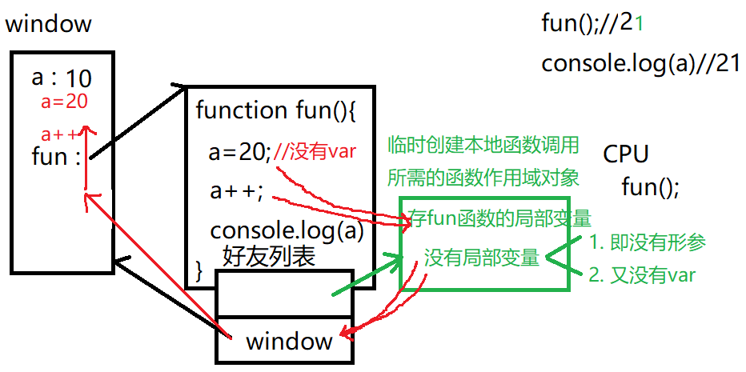
- 闭包closure：
重复使用一个变量，又保护变量不被污染的一种编程方法
本质：外层函数的作用域对象，被内存函数对象引用着，无法释放，外层函数的作用域就是闭包对象
实现过程：外层函数包裹要保护的变量和内层函数——>内存函数一定要使用外层函数的局部变量——>外层函数将内层函数抛出到外部——>调用外层函数，获得返回的内层函数，用变量接住并反复使用
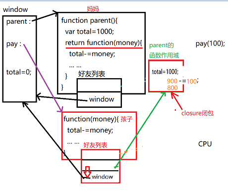
每调用一次外层函数，就抛出一次内层函数，每个内层函数独享一个外层函数的作用域对象，不与其他子函数共享，也不受外部作用域的影响,如果一次生成多个子函数（遍历/循环），则本次生成的所有子函数共用一个外层函数的作用域对象：即妈妈每次生孩子，就单独发放一个专属红包，若一次生多个孩子，本次所有的孩子共用一个红包
手动释放闭包：pay=null
注意：js中不使用关键字var给一个不存在的变量强行赋值，结果自动在全局创建该变量。变量的值随着变量一起也到了全局。
闭包的外层函数向外抛出内层函数共有几种方式?
答: 3种:
1. return function(){ ... }
2. 全局变量=function(){ ... }
3. return [ function, ...]
return { 方法: function(){ ... } }
- 注意事项：
（1）函数fun(){}内部没有return，就没有返回值，返回到函数外部。所以，凡是没有return的函数，都不能直接打印执行结果，打印输出的都是undefined。只有函数内部有return的函数，才能直接输出函数的调用结果。
（2）函数和方法，本质都是function，也就是都是函数
严格来说: 不属于任何对象的独立的function称为函数 比如: parseInt() parseFloat() isNaN()
保存在对象内的函数，称为方法，也称为method 比如: arr.sort() reg.test() str.toUpperCase() 数组的下标和length，不是方法，也不是函数，而是属性。属性不做事儿，只存值。（3）调用函数时的实参值列表中间，不允许出现空值
当遇到多个参数不确定有没有，又要求对应关系时，只能用对象语法解决！ 2步:
1. 定义函数时: function 函数(一个形参变量obj){ //先判断obj对象中包含哪些属性，不包含哪些属性。缺少的属性用默认值代替。 //函数执行过程中，都从对象里，取实参值使用！ } 但是，我们规定，将来调用时，所有实参值都要放在一个对象中传入。
2. 调用函数时: 函数名({属性1: 实参值1, 属性2:实参值2, ...})
优点: 任意参数都可以缺少！都不会报错！（4）回调函数：callback，自己定义的函数，却不由自己亲自调用，而是交给别的函数去调用。
主动想调用一次函数时，就要加()
不调用函数，只是将函数给别人拿走，将来由别人负责调用时。不加()!（5）匿名函数和回调函数：
回调函数不一定是匿名函数，匿名函数也不一定是回调函数。
只有当回调函数只使用一次时，才会定义为匿名函数。如果回调函数可能反复使用，也要定义为有名称的函数。
总结: 是否使用匿名函数，取决于将来这个函数被几处使用。如果只被一处使用，则就用匿名函数。如果多处都需要使用这个函数，则必须起名！
另一方面: 匿名函数也有主动自调的情况，就不属于回调。
总结: 之所以大多数回调函数都是匿名函数，只是因为多数回调函数只在一个位置使用一次！所以，没必要起名。 - 示例代码 返回顶部
-
对象：描述显示中一个具体事物的属性和功能的程序结构
本质：程序集中存储一个事物属性和功能的一块存储空间，再起一个名字
面向对象编程：程序先将数据封装在对象中，再按需使用对象中的成员
好处：便于大量数据的维护和使用
- 面向对象三步：（三大特点）
- 封装：
创建一个对象，集中保存一个事物的属性和功能
封装方法：
- 用{}创建对象：
var 对象名={属性名：值，...，方法：function(){}}
- 用new创建：
（1）先创建空对象：var obj=new Object{};
(2)强行向空对象中添加新属性： obj.属性=值；obj.方法=function(){...}
问题：只能创建一个对象 - 用构造函数创建对象：
专门描述一类对象统一结构的函数
(1)定义构造函数来描述一类对象的统一结构：
function 类型名(形参列表){this.属性名:形参1； ...：...；this.方法名=function(){...}}(2)调用构造函数按照统一结构创建对象
var obj=new 类型名（属性名1，属性名2...）问题：构造函数虽然实现了代码重用，但是浪费了内存
new的原理：
（1）新建一个空对象
（2）让子对象的_ _proto_ _属性指向构造函数（妈妈）的原型对象。凡是从_ _proto_ _属性支出的关系，都叫继承关系
（3）用new调用构造函数，将构造函数中的this，吸引到new上，通过强行赋值的方式，给新对象new添加规定好的属性，凡是构造函数中规定的属性和方法，最终都会添加到子函数中
（4）返回新对象的地址给变量保存起来
- 用{}创建对象：
- 继承:
构造函数的属性和方法，子函数无需重复创建，可以直接使用
只要多个子函数需要共用的属性和方法，都要通过继承使用
如何继承：
（1）不用自己设置继承关系，通过构造函数创建的子函数，可以直接使用构造函数的原型对象
js实现继承，都是通过原型对象来实现的
原型对象：专门集中保存一类子对象共有成员的父对象
构造函数.prototype=原型对象
原型对象.constructor=构造函数
子对象通过new的第2部继承父对象：让子对象的_ _proto_ _属性指向构造函数的原型对象，凡是从_ _proto_ _属性支出的关系，都叫继承关系
结果：原型对象中的成员，子对象无需创建，可直接使用（2）如何向原型对象汇总添加共有成员：强行赋值
构造函数.prototype.成员名=值原型对象中的属性称为子对象的共有属性，共有属性只能用原型对象修改，如果用子对象.共有属性强行修改，只会给子对象添加一个同名的自有属性，从此，子对象不再继承父对象的该属性
内置对象的原型对象：任何一种类型，都是有构造函数和原型对象组成
js中的内置类型：String、Number、Boolean、Array、Date、RegExp、Error、Function、Object
内置类型的构造函数负责创建该类型的子对象，原型函数则保存该类型所有子对象共有的方法和属性（API）为一个类型添加一个共有的自定义函数：
只要项目中，经常对一个类型的对象做一个操作，而这个对象的原型对象中又不包含这种函数，就可以在原型对象中添加自定义函数
原型链：由多级父对象，逐级继承，形成的链式结构
作用：
(1)保存了一个对象可用的所有成员
(2)控制成员的使用顺序：先自有，再共有（3）自定义继承：更换原型对象：
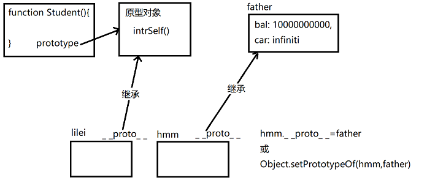
①只更换一个子对象的原型对象：
子对象._ _proto_ _=新原型对象，由于浏览器不推荐使用_ _proto_ _，所以使用 Object.setPrototypeOf(子对象，新原型对象)代替
②同时换对各对象的原型对象：构造函数.prototype=新原型对象，需要在定义完构造函数后，创建子函数前替换 - 多态：一个函数，在不同情况下表现出不同的状态
（1）重载overload：借助arguments接住不同数量的参数
（2）重写：在子对象中定义和父对象中成员完全相同的成员，来覆盖父对象中的成员
- 封装：
- 如何访问对象的成员：
（1）访问对象的属性：对象名.属性名
（2）访问对象的方法：对象.方法()问题：对象自己的方法，直接使用属性名却无法访问到自己的属性值，而是报错：property is not defined
原因：所有不带.的变量，默认只能在作用域链（临时函数作用域和window）中查找，但是对象的{}不是作用域，所以对象不包含在作用域链中，所以，直接使用属性名无法找到藏在对象内的属性，对象本身不在全局作用域中，而是在函数作用域外，对象名通过对象返回的地址引用对象
解决方法：（1）属性名前加对象.，勾引着引擎进入对象查找属性，但是属于紧耦合，如果外部改变，内部被迫跟着改变
（2）松耦合：外部改变，内部代码不用改变，也能自适应——this.属性名 - this概述：
定义：在调用函数时，临时指向正在调用函数.前的对象的关键词
只要对象自己的方法，想访问自己的属性，都必须加this
class="text-danger">this与函数定义在哪无关，只与函数调用时.前的对象有关
1. obj.fun() --> this-->obj
2. 普通函数或者匿名函数自调中，this指向window
fun() 或(function(){ ... })() this-->window3. new fun() --> this-->新对象
4. Student.prototype.intr=function(){ ... this.sname ...}
原型对象中的this--> 将来调用intr()的.前的子对象5.btn.onclick=function(){} this指向btn
6.回调函数：所有回调函数，真正被调用时，前边是没有任何"对象."前缀，所以通常this指向window。
所以，通常如果希望回调函数中的this不指window，而是跟外部的this保持一致，都要改为箭头函数 - question清单：
- 语法规定:
如果直接访问一个不存在的变量，会报错！ReferenceError: a未定义
如果强行访问对象中一个不存在的属性，或访问数组中一个不存在的位置，不报错！而是返回undefined。
全局变量a，其实都有两个角色，一个是单纯的变量a，同时也是window对象中的成员。所以，以单独变量方式访问不存在的变量，则参考第一条规则，会报错。如果以window.a成员的方式访问变量a，永远不会报错！而是返回undefined。
补: var a和 window.a
1. 如果未声明变量a，则单独使用a会报错，而使用window.a不报错。
2. var a的变量不能用delete彻底删除 而用window.a强行添加的变量，才能被delete彻底删除
总结: 今后即使用全局变量，也要用window.变量。不要用var。因为如果不想用了，还可以用delete彻底删除 - console.log(a) //报错，为什么不是undefined?
a=10;
console.log(a)//10
答？因为a=10前，没有var。没有var，就不是声明语法，就不会会被声明提前。不会被声明提前，第一次使用时就没有a可用，就报错。a=10，只是一个赋值语句。赋值语句会强行创建变量a，但是，也只能在语句所在位置才创建a。因为声明提前规定，“赋值留在原地” - 为什么加入overflow:hidden或添加元素设置为display:table，可防止高度坍塌？BFC？
答: Block Formatting Context, 块格式化上下文, 以块的形式，格式化显示元素的子内容
为什么: 启用BFC模式都是为了避免子元素被隐藏或遮挡。 如何启用BFC：
浮动元素：float 除 none 以外的值。
绝对定位元素：position (absolute、fixed)。
display 为 inline-block、table-cells、flex。
overflow 除了 visible 以外的值 (hidden、auto、scroll)
后果:
1. 父元素启用BFC，则范围必须包含所有子元素的范围。
2. 平级子元素启用BFC，则其他兄弟子元素不能覆盖在它之上。 更多BFC相关 - JS方法实现斐波那契数列:
斐波那契数列:1 1 2 3 5 8 13 ....每个数字是前两个数字之和 代码:获得第n位的数字 function fib(n){ if(n<3){return n=1} else{ //声明三个盒子 var f1=1,f2=1,fn; for(var i=3;i<=n;i++){ fn=f1+f2; f1=f2; f2=fn; } return fn; } } - 对面向过程编程和面向对象编程的理解?
答:面向过程:分析业务逻辑,理清其中的流程,分割为若干个过程--funciton
面向对象:分析业务逻辑,理清求中的数据对象及关系,封装为若干个对象,对象之间互相发消息--Object - 类和对象的关系?
答:class 类,是一组事物共性的抽象--类是抽象的,没有具体值 class = attributes + methods
object 对象,是从属于某个类的一个具体事例--对象是具体的 - 数组的length属性，紧紧记录数字下标的元素个数。自定义下标名称的元素，是不参与length统计的。
- js中给一个不存在的变量强行赋值，结果自动在全局创建该变量。变量的值随着变量一起也到了全局。
- 语法规定:
- 返回顶部 参考示例
- ECMAScript标准的第五个升级版本
- ES5新规：
- 严格模式:"use strict";
- 严格模式的新要求
- 禁止给未声明的变量赋值，否则会报错：xxx is not defined，避免内存泄漏和全局污染
- 静默失败升级为错误
- 普通函数调用和匿名函数自调中的this不再默认指向window，而是指向undefined
- 禁止使用arguments.callee：
arguments.callee是在函数运行时，专门获得当前正在执行的函数本身，递归时使用
- 保护对象：控制对对象的属性值或对象结构进行的随意的篡改。
- 保护对象的属性：
- 命名属性，可用.访问到的属性
- 数据属性：实际存储属性值的属性.
ES5中：每个数据属性都是一个小对象，小对象中保存一个属性值和三个开关。
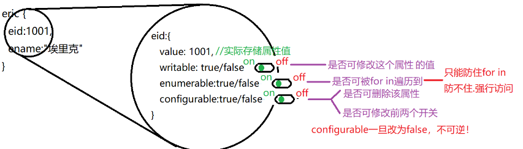
注：不能用.直接修改属性对象内部的开关属性，必须用专门的函数：
Object.defineProperty(对象名，“属性名”，{开关：true/false})
三个开关：writable 可修改的 enumerable 可遍历的 configurable 可删除的
Object.defineProperties(对象名，{属性名：{开关：true/false}，属性名：{开关：true/false}...}) - 访问器属性：自己不保存数据，专门提供对其他数据属性的保护
保护步骤：
(1)先将要保护的数据属性，隐姓埋名，并且半隐藏
(2)为对象添加访问器属性，保护数据属性
(3)访问器属性冒名顶替原属性名，属性中设置get和set两个函数，get负责读取受保护的属性值，set负责先验证再修改受保护的值。
访问器属性不需要value和writable，但是需要设置enumerable和configurable
-
开关的默认值：
（1）在{}中直接添加的数据属性，三大开关默认值是true，都是开着的
（2）如果用Object.defineProperty()新增的属性，三大开关默认都是false，默认都关着，所以在用defineProperty()添加属性是，最好把所有开关写全，自己控制开关 -
示例： var eric={ eid:1001, ename:"艾瑞克", _eage:25 }; Object.defineProperties(eric,{ _eage:{//数据属性，隐姓埋名，半隐藏 enumerable:false,//禁止遍历 configurable:false//禁止删除 }, //访问器属性，不能用.添加，只能用defineProperties或defineProperty添加 eage:{//访问器属性冒名顶替原属性名 get:function(){//当外人试图获取eage的属性值时，自动调用get，由get代为从受保护的属性中拿出真实值返回给外部 return this._eage }, set:function(value){ //当外人试图修改eage的属性值时，自动调用set //将要赋的新值，先交给value //在set内部使用自定义规则验证value //value符合要求 if(value >=18&&value<=65){ //才实际保存回受保护的数据属性中 this._eage=value; }else{//否则，不赋值，并报错 throw Error("年龄必须介于18~65之间") } }, enumerable:true, configurable:false } });
- 数据属性：实际存储属性值的属性.
- 内部属性：无法用.访问到的属性
- 命名属性，可用.访问到的属性
- 保护对象的结构：3个级别
- 防扩展：禁止添加新属性（增） Object.preventExtensions(obj)
- 密封：在兼具防扩展同时，进一步禁止删除现有属性 Object.seal(obj) （增 删）
- 冻结：在兼具密封的基础上，进一步禁止修改属性的值 Object.freeze(obj) （增 删 改）
- 保护对象的属性：
- 严格模式:"use strict";
- Obect.create()函数：在没有构造函数的情况下，也想创建一个子对象
- 创建一个新对象
- 继承一个父对象
- 为新对象添加自由属性
- var 子对象=Object.create(
父对象,
{属性名1:{
value:属性值,writable:true/false,enumerable:true/false,configurable:true/false
},属性名2:{
value:属性值,writable:true/false,enumerable:true/false,configurable:true/false
},......})
- call,apply,bind替换this
只要函数执行时，内部的this不是想要的，就可以用这三个函数，将不想要的this替换成任意想要的对象
其中call和apply临时替换一次this为任意指定对象，bind为永久替换- call：可以让任何对象去调用原本没有任何关系的一个函数
.call(替换this的对象，实参1......) - apply：用法类似于call，知识要求所有实参值都放在一个数组中整体传入
.apply(替换this的对象，实参arr)
apply可以将实参arr打散为多个单独元素值，分别传给对应的每个形参变量 - bind：不调用函数，而是基于原函数，创建一个新函数副本，并永久替换新函数中的this为指定对象
var 新函数=旧函数.bind(替换this的对象，要绑定的实参值，......)
- call：可以让任何对象去调用原本没有任何关系的一个函数
- 数组函数：
- 在数组中查找一个元素的位置：indexOf
var i=arr.indexOf("ele",fromi)
返回值：找到返回对应元素的下标i，找不到返回-1 - 判断：
（1）判断数组中是否所有元素都符合要求：
var bool=arr.every(function(value,i,arr){
//value:当前元素值 i:当前下标为止 arr:当前数组对象
return 判断条件； })
（2）判断数组中是否包含符合要求的元素
var bool=arr.some(function(value,i,arr){
return 判断条件；
}) - 遍历：
- 普通遍历：代替for循环
for(var i=0;i;i++){..}
arr.forEach(function(value,i,arr){对当前元素的操作}) - 遍历并复制原数组为新数组
var 新数组=原数组.map(function(value,i,arr){
return 要放入新数组中的处理过的元素值
})
原理：（1）map先自动创建一个新数组；
（2）带着回调函数遍历原数组，自动将回调函数在每个元素上执行一次。将回调函数return的结果，放到新数组相同的位置上
（3）遍历结束，返回新数组1、遍历原数组并返回处理过的新数组，原数组不变 var nums=[1,3,5,7,9]; var evens=nums.map(function(value){ return value*2; }) 2、把成绩放到页面上去 var score=[85,65,74,99]; var newArr=score.map(elem=>`<li>elem</li>`)//遍历原数组，返回处理过的新数组 var html=newArr.join(""); ulScores.innerHTML=html; 简化版： ulScores.innerHTML=score.map(elem=>`<li>elem</li>`).join("") - 总结：
（1）仅单纯代替for循环遍历数组，首选forEach；
（2）想保护原数组，返回新数组时，采用map
- 普通遍历：代替for循环
- 过滤：复制出原数组中符合条件的元素组成新数组返回，原数组保持不变
var 新数组=原数组.filter( function(value,i,arr){ return 判断条件; } ) - 汇总:对数组中的元素进行统计，得出最终结论。
示例1：var sum=arr.reduce( function(prev,elem,i,arr){ //prev 保存截止到当前元素的临时汇总值 return 将当前元素elem，累加到prev中，得到的新汇总值 }，起始值 )示例2：var result=arr.reduce( function(prev,elem,i,arr){ //prev：截止到当前，临时的汇总值 return 将当前值汇总到临时结果中产生的新结果 },起始值 ) - 强调：这六个数组函数因为内部内置的知识普通for循环，所以支持索引数组，不支持关联数组
- 在数组中查找一个元素的位置：indexOf
- 笔试题：
一、如何用ES5实现两种类型间的继承: 假设第一种类型： function First(a,b){ this.a=a;this.b=b} First()函数的原型对象为First.prototype 第二种类型为：function Second(a,b,c){ this.c=c} Second()函数原型对象为Second.property 要让第二种类型继承第一种类型，即要求Second()不仅能调用First()，还能调用First的原型对象 （1）让Second()能调用First()的原型对象 Object.setPrototypeOf(Second.prototype,First.prototype) （2）在Second()中调用First(),如果直接调用，由于调用时First()前没有调用对象，其中的this会直接指向window，会造成属性不但不能进入Second()，还会泄露到全局，所以在Second()中使用时需要使用First.call(this,a,b)替换其中的this，即： function Second(a,b,c){ First.call(this,a,b); this.c=c}; 二、如何判断一个对象是不是数组。共有几种方法！ 答：目前一共有七种方法，分别为： 1、判断父级原型对象_ _proto_ _是否是array的原型对象prototype （1）用_ _proto_ _获得对象的原型对象，再和数组的原型对象作比较 obj._ _proto_ _==Array.prototype （2）由于_ _proto_ _可能被浏览器禁用，所以用等效的函数来完成_ _proto_ _的任务：Object.getPrototypeOf(obj)==Array.prototype （3）更直接的函数：father.isPrototypeOf(child) 判断father是否是child的父级原型对象 Array.prototype.isPrototypeOf(obj) 2、判断构造函数constructor （4）判断父级原型对象中的constructor属性是否是array obj.constructor==Array true=>array （5）用"child instanceof mother" 判断child是否是mother创建的 obj instanceof Array true=>array 3、输出对象中的内部隐藏属性class （6）用.call()将顶级父对象的toString()函数抢过来，给自己使用，得到的结果的第二项即为该对象的class属性 Object.prototype.toString.call(obj)=="[object Array]" 4、ES5新增了一个专门用来判断对象是否为数组的函数：Array.isArray(obj) =>bool 三、统计一个字符串中每个字符出现的个数，哪个字母出现最多，是几次？ 答：var str="youcanyouupnocannobb"; var arr=str.split("");//拆分字符串为数组 var result=arr.reduce(//reduce：汇总 function(prev,elem,i,arr){//prev 为对象当前状态prev={y:2,o:3...} if(prev[elem]==undefined){//如果当前对象没有elem元素 prev[elem]=1;//则强行给prev赋值，添加属性elem，并赋值为1 }else{//否则，即prev中已有当前元素 prev[elem]+=1;//则给当前元素的值加1 } return prev; },{} ); console.log(result); //东哥版 (function(){ var char,count; for(var key in result){//遍历result中每个成员 if(char==undefined){//第一次，尚未开始比较，暂定第一个看到的字母和它的次数为最多，保存在变量中 char=key; count=result[key]; }else{//之后每次 if(result[key]>count){//如果新字母数量大于目前处于最多次数的字母次数 char=key;//取而代之，保存在变量中 count=result[key]; } } } console.log(`${char}元素出现次数最多，一共出现${count}次`) })() //脑残版 var nums=[]; for(var val in result){//遍历result对象，将result对象中每个���性名对应的属性值添加到数组nums中去 nums.push(result[val]); }; var a=nums.sort(function(a,b){return a-b}).slice(-1);//将数组nums从小到大排序，并截取最后一位，即最大值 var b; for(var val in result){//遍历result对象，获取最大值对应的属性名 if(result[val]==a){ b=val; } } console.log(`${b}元素出现次数最多，一共出现${a}次`) 四、遍历数组中的每个成绩，将它们添加到页面中的ul中去 答: var score=[88,95,77,68]; //遍历数组，将每个成绩变为一个li元素，放入新数组 var newArr=score.map( function(elem){ return `<li>elem</li>` } ); //将新数组无缝拼接为字符串 var html=newArr.join(""); //将字符串赋值给ul的innerHTML ulScore.innerHTML=html; 也可合并起来： ulScore.innerHTML=score.map(function(elem){return `<li>elem</li>`}).join(""); - 返回顶部
- let：代替var声明变量，阻止了声明提前，添加了块级作用域，let本质上就是一个匿名函数自调用，并在底层给变量改了名字
- 箭头函数：箭头函数是函数作用域消失，让函数内外的this保持一致，所以对象方法和DOM中的事件处理函数不能用箭头函数。 箭头函数中，无法使用arguments
- for of专门代替普通for循环，来遍历一个索引数组
遍历索引数组，共有三种方法- for循环：最灵活
for(var i=0;i<arr.length;i++){var elem=arr[i]}
可以自由控制遍历的范围，步调和方向 - arr.forEach((elem,i,arr)=<{})
局限：不便于灵活控制遍历的范围/步调和顺序；类数组对象不能用forEach，因为forEach是数组的原型对象，而类数组对象不是数组，不能使用数组的原型对象 - for of:for(var elem of arr){ //of会自动获取arr中每个元素值}
局限：无法获得当前遍历的位置
强调：for of只能用于遍历数字下标的索引数组和类数组对象；
for in只能遍历关联数组和对象 - 示例：
1、三种遍历的对比 var arr=["亮亮","然然","东东","燕儿"]; for(var i=0;i<arr.length;i++){ console.log(arr[i]+"- 到！"); }; arr.forEach( elem=>console.log(elem+"- 到！"); ); for(var elem of arr){ console.log(elem+"- 到！"); }; 2、统计字符串中每个字母出现的次数 var str="helloworld"; var obj={};//用于承接每个字母及其出现次数 for(var char of str){ if(obj[char]==undefined){ obj[char]=1; }else{ obj[char]+=1 } } 3、定义函数add，可执行任意多个数字的加法，求和 function add(){ var sum=0; for(var num of arguments){ sum+=num; } return sum; } add(1,2,3); add(25,36,4,85,21)
- for循环：最灵活
- 参数增强
（1）参数默认值default：只能解决最后一个形参不确定的情况，如果没有传入最后一个实参值，则自动使用默认值代替
如果不支持ES6，可使用ES5方法：形参=形参||默认值
（2）剩余参数rest：专门代替arguments的语法，收集不确定个数的实参值， function fn(其他形参，...数组名){//剩余的参数都放在数组中}
（3）打散数组参数spread：例如：Math.max(...arr)，单纯的打散数组为单个值示例： 1、default： indexOf() 查找元素在数组中的下标，封装原理 function(arr,elem,fromi=0){ //ES5，设置默认值方法： fromi=fromi||0 for(var i=fromi;i<arr.length;i++){//从fromi开始遍历数组 if(elem==arr[i]){//如果当前元素和要查找的元素相同 return i;//返回当前元素的下标 }else{ return -1;//如果遍历结束还没找到，返回-1 } } } var arr=[1,3,5,7,1,2,3] indexOf(arr,3) indexOf(arr,3,3) 2、...rest： 计算工资条中的总工资，不同的人工资条有多少项，不确定 function calc(ename,...arr){ console.log(`${ename}的总工资为${ arr.reduce((prev,elem)=>prev+elem,0) }`) } 3、spread：...arr：打散数组 var arr=[2,5,7,6]; Math.max.apply(null,arr); Math.max(...arr); 合并两个数组： var arr1=[1,3,5]; var arr2=[5,7,2]; var arr=[...arr1,...arr2]; 合并两个对象：//一切对象的底层，都是关联数组，所以...spread也可用于打散对象 var obj1={x:1,y:2,z:3}; var obj2={a:1,b:2,c:3}; var obj={...obj1,...obj2} - 解构：destruct：将一个大的对象中集中存储的成员，结构出来便于单独使用，将结构嵌套非常复杂的对象，先解构成多个小成员，再分别单独使用：分为：
-
数组解构：var [val1,val2...]=arr,声明的数组中的变量和要解构的数组一一对应
例如：var arr=[2019,8,24];
var [,month,date]=arr;
//month=8;data=24 -
对象解构：var {属性名1：变量1，属性名2：变量名2...}=对象
如果属性名和变量名相同，可以简写为一个，前后数组中的属性名都必须相同例如:
var user={a:1,b:2,c:3,d:4}
var {a:a,b:b}=user;//用相同的属性名去结构对象中的属性，可获得对象中相同属性名的值
var {a,b}=user;//属性名和值相同时，可以简写，只写一个 -
参数解构：所有的参数，都放在对象中传入函数，然后再函数中，再将对象的成员解构出来，单独使用。
定义函数时：将形参列表定义再一个对象结构中：function({val1,val2...}){ val1||""; val2||""; ...; //设置参数的默认值
函数体 }
调用函数时，将实参列表定义在一个对象中，整体传入
-
数组解构：var [val1,val2...]=arr,声明的数组中的变量和要解构的数组一一对应
- 面向对象：
(1)对于单个对象：如果变量名和属性名相同，可以只写一个名字，两用；对象中的方法不能用箭头函数，但是可以去掉":function"
ex: var lili={ uname, uage, intr(){...} }
示例： function Student(sname,sage){ this.sname=sname; this.sage=sage } Student.prototype.intr=function(){ console.log(`I'm ${this.sname},I'm ${this.sage}`) }(2)class:对一个类型中构造函数和原型对象方法的集中定义的程序结构；
创建一种新的类型时，不需要分开创建构造函数和原型对象，而是先创建class，再将类型的所有成员集中定义再class中
例如：class Student{ constructor(形参列表){//构造函数函数体}， 原型对象：intr(){...} }
示例： class Stdent{ constructor(sname,sage){ this.sname=sname; this.sage=sage }; intr(){ console.log(`I'm ${this.sname},I'm ${this.sage}`) } }(3)class间的继承：先创建一个父class，集中存储相同部分的结构属性和方法定义，再创建子类型class，用extends关键词继承父类型
强调：子函数的构造函数中，要使用super()调用一次父类型的构造函数，super()必须卸载自己扩展的属性之前示例： class Enemy{ constructor(x,y){ this.x=x; this.y=y }; fly(){ console.log(`fly to x"${this.x},y:${this.y}`) } } class San extends Enemy{ constructor(x,y,award){ super(x,y); this.award=award }; getAward(){ console.log(`get${this.award}`) } } - promise：专门实现多个异步函数，必须先后顺序执行的技术，可以解决回调地狱
(1)在异步函数内部，用new Promise(function(resolve，reject){...})包裹原函数，并用return返回
(2)在异步任务执行完后，调用附赠的开关resolve()开门，通知下一个任务开始执行。注意：resolve()内接参数，可以传参
(3)将整个new Promise()对象返回到函数外部，再用.then()接下一项任务函数
调用支持promise的函数：前一个异步函数().then(下一个异步函数)
如果有错误，可以再在后面接.catch(fuction(err){console.log(err)})
ES7中，采用async await编写异步代码顺序执行，可以避免嵌套
示例:(async function(){
/*try{*/
同步代码;
var 返回值=await 异步函数()；
同步代码
/*}catch(err){...}*/ })()
promise的三种状态：
（1）pedding：异步函数正在调用状态
（2）resolve：当前任务执行完，且执行成功
（3）reject：当前执行任务出错，无法继续向后运行
具体示例看笔试题部分 - 回调函数callback：自己定义的函数，自己不调用，而是交给别的函数调用，所有回调函数的执行，都是自动执行的，没有.前缀，所以回调函数中的this一般指向window
- 面试题：
- 两种类型间的继承：定义一个父类型，集中保存两种子类型相同的部分；
（1）定义抽象父类型：父类型构造函数中集中定义多个子类型都有的相同的属性结构，原型对象集中保存多个子类型共用的方法
（2）让子类型继承父类型：class 子类型 extends 父类型{super(//调用父类型构造函数),...}；
extends等效于Object.setPrototypeOf(子类型.prototype，父类型.prototype) 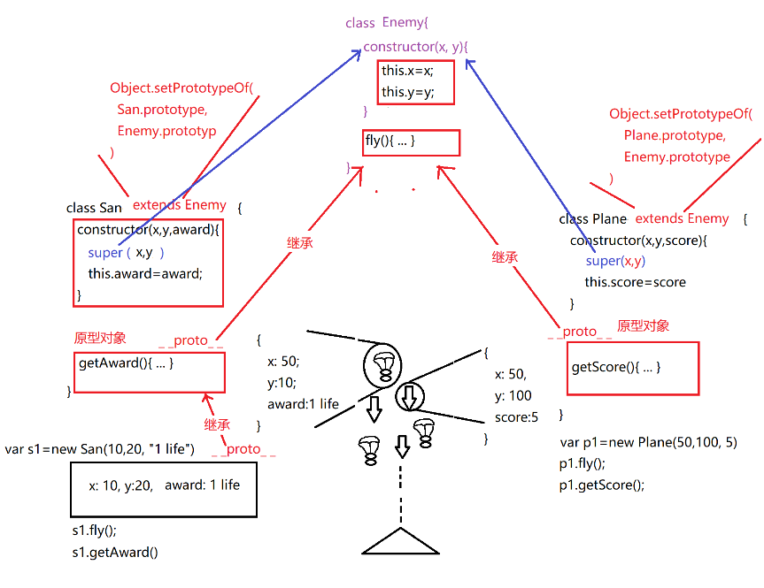 - 异步加载：
（1）回调地狱模式： function liang(callback){ console.log("liang begins to run") setTimeout(function(){ console.log("liang run over"); callback(); },1000) }; function ran(callback){ console.log("ran begins to run") setTimeout(function(){ console.log("ran run over"); callback(); },1000) }; function dong(callback){ console.log("dong begins to run") setTimeout(function(){ console.log("dong run over"); callback(); },1000) }; liang( function(){ ran( function(){ dong( function(){ console.log("比赛结束！") } ) } ) } ) （2）promise模式 function liang(){ return new Promise( function(reslove,reject){ var val="a"; console.log("liang begins to run"); setTimeout(function(){ if(Math.random()<0.6){ console.log("liang run over"); reslove(val); }else{ console.log("liang stop"); reject("liang is hurted!"); } },3000) } ) }; function ran(){ return new Promise( function(resolve，reject){ var val="b"; console.log("ran begins to run"); setTimeout(function(){ if(Math.random()<0.6){ console.log("ran run over"); reslove(val); }else{ console.log("ran stop"); reject("ran is hurted!"); } },1000) } ) }; function dong(){ return new Promise( function(reslove,reject){ var val="c"; console.log("dong begins to run"); setTimeout(function(){ if(Math.random()<0.6){ console.log("dong run over"); reslove(); }else{ console.log("dong stop"); reject("dong is hurted!"); } },2000) } ) }; liang().then(ran).then(dong).then(()=>console.log("比赛结束！")).catch(err=>{ console.log(err);console.log("弃权！"); }) Promise.all([ liang(), ran(), dong() ]).then(function(arr){console.log("比赛结束！");console.log("收到变量[${arr}]")}) (async function(){ try{ var val=await liang(); var val=await ran(); await dong(); console.log("比赛结束！") }catch(err){ console.log(err); consoe.log("弃赛！") } })();
-
var a=3,b=5; //1.a+=b,b=a-b,a-=b; //2.a^=b,b^=a,a^=b; //3.a=[b,b=a][0]; //4.[a,b]=[b,a]; //5.a-=b,b=a+b,a=b-a; //6.a={a:b,b:a},b=a.b,a=a.a; //7.a=[a,b],b=a[0],a=a[1]
- 两种类型间的继承：定义一个父类型，集中保存两种子类型相同的部分；
- 部分示例 回到顶部
- DOM:document object model,专门操作网页内容的一套函数和对象，还是一个由W3C制定的标准：
作用：操作网页内容，为网页添加交互行为，
包括：增删改查，事件绑定 - DOM树：在内存中，集中保存一个网页中所有内容的属性结构
- 查找元素：
- 不需要查找，直接就可获得：
document.documentElement html元素
document.head head元素
document.body body元素 - 按节点间关系查找，包括：
（1）节点树，包含所有节点内容的完整树结构，同时包含看不见的换行和空字符
①父子关系：
节点.parentNode 获得当前节点的父节点
父节点.childNodes 获得当前父节点下所有直接子节点的集合，返回的是一个类数组对象
父节点.firstChild 获得当前父节点下的第一个直接子节点
父节点.lastChild 获得当前父节点下的最后一个直接子节点
②兄弟关系
节点.previousSibling 获得当前节点平级的前一个相邻的兄弟节点
节点.nextSibling 获得当前节点平级的下一个相邻的兄弟节点
（2）元素树：仅包含元素节点的树结构
①父子关系：
元素.parentElement 获得当前元素的父元素，也可以用parentNode
父元素.children 获得当前元素的所有直接子元素，集合
父元素.firstElementChild 获得当前父元素下的第一个直接子元素
父元素.lastElementChild 获得当前父元素下的最后一个直接子元素
②兄弟关系：
元素.previousElementSibling 获得当前元素平级的前一个相邻的兄弟元素
元素.nextElementSibling 获得当前元素平级的下一个相邻的兄弟元素 - 按html特征查找：
- 按id属性查找：
var elem=document.getElementById("元素id")
如果找到，返回元素对象，找不到返回null，只能用document调用 - 按标签名查找：
var arr=父元素.getElementByTagName("标签名")
如果找到，返回由多个元素组成的集合，如果找不到，返回空集合 - 按class属性查找：
var arr=父元素.getElementByClassName("类名")
如果找到，返回由多个元素组成的集合，如果找不到，返回空集合 - 按name属性查找：
var arr=document.getElementByName("name名")
如果找到，返回由多个元素组成的集合，如果找不到，返回空集合 - 问题：返回集合的查找方式及时查找结果只有一个对象，也是一个集合，如果调用该对象，需要在结果后面加[0] ex:document.getElementByName("uname")[0]
- 按id属性查找：
- 按选择器当条件查找：
（1）仅查找一个符合条件的元素：
var 元素=父元素.querySelector("任意复杂的选择器")
如果找到，返回一个元素对象，如果没找到，返回null
（2）查找多个符合条件的元素：
var arr=父元素.querySelectorAll("选择器")
如果找到，返回多个元素的集合，如果没找到，返回空集合 示例1： 示例2： 示例3： - 总结:
凡是返回值为下标的函数，找不到都返回-1，比如: indexOf
凡是返回值为一个对象或数组的，找不到都返回null，比如: querySelector() getElementById() match()
凡是返回值为一个集合(类数组对象)，找不到都返回长度为0的空数组: [].length=0，比如: querySelectorAll()，getElementsByXXX() ，
没有函数返回undefined
- 不需要查找，直接就可获得：
- 修改元素：
- 内容：
（1）获取或修改原始的html片段：元素.innerHTML
(2)获取或修改纯文本内容：元素.textContent 去掉了内嵌的标签，并将特殊符号翻译为正文
（3）获取或修改表单元素的内容：元素.value - 属性：3种：
（1）HTML标准属性，即html标准中规定的字符串类型的属性，如id,title,class,href,src,name,value...
修改标准属性的方式：
①早期的核心DOM函数：
var 属性值=元素.getAttribute("属性名") 获取属性值
元素.setAttribute("属性名"，"新值") 修改属性值
var bool=元素.hasAttribute("属性名") 判断元素是否包含改属性
元素.removeAttribute("属性名") 移除元素上的指定属性
②后来的HTML DOM函数：对部分常用函数和对象提供的简化版函数
对于HTML标准属性，可以用 元素.属性名 来操作
例外：.class不能使用，因为class是js关键词，所以改为.className操作元素的样式属性
注：元素的标准属性，值必须为字符串
获取属性值：元素.属性名
修改属性值： 元素.属性名="值"
判断是否包含指定属性：元素.属性名！==""
移除属性：元素.属性名=""
（2）状态属性：值为bool类型的属性：disabled，selected，checked，multiple，readonly，active
特点：无值属性，使用时不带=和属性值
不能用核心DOM的四个函数，因为核心DOM函数只能操作字符串类型的属性
只能用.来访问，值都是bool类型，通过元素.属性名=true/false控制属性是否生效
（3）自定义扩展属性：程序猿自发添加的属性，行业规范为<元素 data-自定义属性名="值"
作用：在客户端html元素上临时缓存数据、代替其他选择器，用来触发事件的元素，为元素绑定事件
核心DOM操作，没有兼容性问题：元素.getAttribute("data-属性名")；元素.setAttribute("data-属性名","值") HTML5新规，有兼容性问题：对应的属性选择器：[data-属性名=值] 注：值不用加引号
或者：元素.dataset.属性名 dataset可以自动收集页面上所有data-开头的属性 - 样式：
（1）修改内联样式：元素.style.样式名="样式属性" 注：所有带-的css属性，一律去-，驼峰命名
（2）获取样式：var style=getComputedStyle(元素) 获得指定元素计算后的完整样式对象，返回值是一个包含所有css属性的巨大的对象
getComputedStyle()有规定，参数必须是一个实实在在的DOM元素对象！不能只是一个id名或class名
var 属性值=style.css属性 注：计算后的样式，都是只读的，无法修改
注：修改样式时，style.css属性一句话只能改一个css属性。而网页中一个效果的变化，可能同时涉及多个css说行。如果用style.css属性=值 修改，代码会很繁琐。而且，加样式时繁琐一次，去掉样式时同样繁琐！
解决: 当批量修改样式时，用className修改是最划算的！
- 内容：
- 添加元素：
（1）创建一个空元素：var elem=document.createElement("elem"),只能用document调用
（2）为空元素添加关键属性和内容：例如：a.href="http://www.baidu.com" a.innerHTML="百度一下"
（3）将空元素挂载到DOM树上：分为三种情况
①追加到一个父元素下的所有子元素末尾：父元素.appendChild(新元素)
②追加到父元素下某个子元素之前：父元素.insertBefore(新元素，现有元素)
③替换父元素下一个现有的旧元素：父元素.replaceChild(新元素，旧元素)
添加方法的优化：
原因：每操作一次DOM树，就会导致重排重绘，频繁操作，会导致闪屏
解决方法：①如果同时添加父元素和子元素，先在内存中将子元素添加到父元素上，在将父元素整体一次性添加到DOM树上
②如果父元素已经在页面上，只需添加多个平级子元素，可以创建一个临时的父元素——文档片段对象，先在内存中将子元素添加到文档片段对象中，再将文档片段对象添加到DOM树上
文档片段：内存中临时保存多个平级子元素的虚拟父元素
操作步骤：三步；
1、创建文档片段：var frag=document.createDocumentFragment();
2、将子元素添加到文档片段上：frag.appendChild(新元素)
3、将文档片段对象加载到DOM树上：真实父元素.appendChild(frag) - 删除：父元素.removeChild(子元素)
- HTML DOM常用对象：
- Image对象：代表页面上一个img元素：
简化：创建一个img元素：var img=new Image()
只创建img元素，不负责挂载 - Select/Option表单元素中的下拉选:
(1)Select对象，代表页面上一个select元素， 属性： .selectedIndex 获得当前选中的option在整个select下的位置下表 .value 获得当前选中的option的value属性值，如果option上没有value属性，则返回option的内容文本 .options 获得当前select下所有option对象的集合 .options.length 获得当前select下共有几个option对象，也可简写为.length 方法： .add(option) 向select下添加一个option对象 .remove(i) 移除i位置的option对象 （2）Option对象：代表页面上一个option元素 唯一简化：创建option元素：var opt=new Option(文本内容，value属性值)示例 - table及其子元素：
table —— 行分组 —— tr —— td/th 逐级管理
table 管着行分组： 由于HTML规定，一个table下可以有多个tbody，所以tbody不直接隶属于table，而是放在table对象的tBodies集合中管理 添加行分组： var thead=table.createTHead(); var tbody=table.createTBody(); var tfoot=table.createTFoot(); 删除行分组： table.deleteTHead(); table.deleteTFoot(); 获取行分组： table.tHead; table.tFoot; table.tBodies[0]; 行分组管着行： 添加行： var tr=行分组.insertRow(i);在当前行分组内i位置，添加一个新行 固定套路：末尾追加一行：var tr=行分组.insertRow(); 开头插入一行：var tr=行分组.insertRow(0); 删除行：table.deleteRow(tr.rowIndex);删除行分组的第tr.rowIndex行 获取行：行分组.rows[i] 行分组中将所有行对象，都保存在一个rows集合中管理 行管着格： 添加格：var td=tr.insertCell(i) 在i位置创建一格 固定套路：末尾追加一格：var td=tr.insertCell() 删除格：tr.deleteCell(); 获取格：tr.cells[i] tr将内部所有td元素对象，都集中保存在一个cells集合中示例 - 确认框：有两个选项的对话框 var bool=confirm("消息提示"); 如果用户点确认，就返回true； 点取消，就返回false
- Form/表单元素：
Form对象：document对象已经将当前页面中所有的form对象收集在了forms数组中
获取：document.forms[i/id]
属性：.elements 获得表单中所有表单元素对象的集合
.length ==.elements.length 获得表单中表单元素的个数
表单元素对象：
获取：不带name的表单元素：form.elements[i/id]
有name的表单元素：form.name名
方法：表单元素.focus() 让当前表单元素自动获得焦点 示例
- Image对象：代表页面上一个img元素：
- 笔试题：
- 定义一个函数，遍历一个指定父元素下的所有后代元素？
（1）定义一个函数，仅遍历直接子元素；
（2）如果当前子元素有更下一级直接子元素，则对当前子元素继续调用当前函数，查找子元素的直接子元素
代码：
function getChildren(parent){ //内部调用函数，可以用arguments.callee代替getChildren var children=parent.children;//获得当前父元素的所有直接子元素 for(var child of children){//遍历所有直接子元素 if(child.children.length>0){//如果当前子元素还有子元素 arguemnts.callee(child)//就对当前元素继续调用getChildren()函数 } } } //查找body元素下所有后代元素 getChildren(document.body)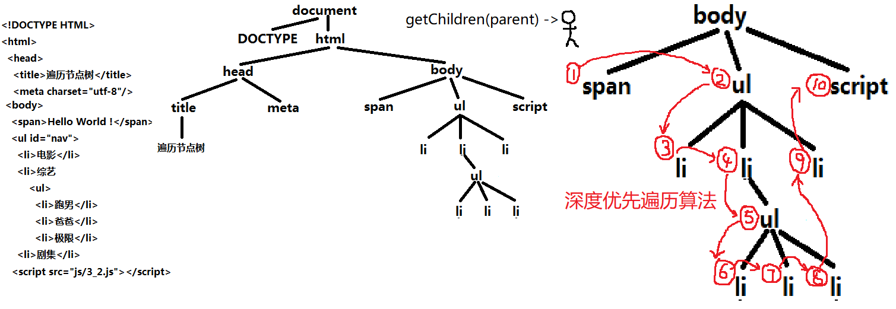 - 定时器;
- 定义一个函数，遍历一个指定父元素下的所有后代元素？
- BOM：browser object model 浏览器对象模型
专门操作或访问浏览器软件的一批函数和对象
在想要获得浏览器软件的信息和操作浏览器窗口时使用 - BOM的使用：
包括一个最大的对象window，window有三个角色：
（1）代替ECMAScript中的global充当全局作用域对象
（2）包含了所有ES,BOM,DOM的函数和对象，如window.Array/document/alert等
（3）代表当前正在打开的浏览器窗口：
例如：获取浏览器窗口的大小：
完整大小：window.outerWidth window.outerHeight
文档显示区大小：window.innerWidth window.innerHeight - 打开和关闭窗口
打开新窗口：4种需求： （1）在当前窗口打开，可后退： html：<a href="url" target="_self"> js: window.open("url","_self") （2）在当前窗口打开，禁止后退： js： location.replace("新url") （3）在新窗口打开，可打开多个 html：<a href="url" target="_blank"> js: window.open("url","_blank") （4）在新窗口打开，只能打开一个 html：<a href="url" target="自定义窗口名"> js: window.open("url","自定义窗口名") 示例
- window下包含的属性：
- history：管前进后退，保存了当前窗口打开后，成功访问过的url历史记录数组
history.go(n) n为正，前进，为负，后退，为0，刷新 - location：管地址栏，专门保存地址栏中的地址信息，以及提供执行跳转操作的方法的对象
（1）获取地址栏中的url信息：location.href 获得地址栏中完整的url
location.host 主机名+端口号
location.hostname 主机名
location.port 端口号
location.pathname 相对路径
location.search 获得？以后的查询字符串
location.hash 获得#锚点地址
示例 （2）执行跳转操作：
①当前窗口打开，可后退：location.href="新url"/location.assign("新url")/location="新url" 都等效于window.open("url","_self")
②在当前窗口打开，禁止后退：location.replace("新url");
③刷新页面：
《1》普通刷新：优先从浏览器缓存中获取资源：history.go(0) location.reload() F5
《2》强制刷新：跳过浏览器缓存，总是从服务端获取新内容：location.reload(true) - document：DOM中的document对象
- navigator：管浏览器配置信息,保存浏览器配置信息的对象，在获取浏览器配置时使用：
包括：
（1）判断是否安装某个插件
（2）判断浏览器的名称和版本号 - screen：管显示设备的信息
- event：管事件处理
- history：管前进后退，保存了当前窗口打开后，成功访问过的url历史记录数组
- 事件：浏览器自动触发的，或者用户手动触发的页面内容状态的改变
事件属性：每个元素上都有一批以on开头的事件属性，用于提前保存事件处理函数。当事件发生时，浏览器会自动找到该事件属性上绑定的处理函数，自动执行。
事件处理函数：事件发生时，想要自动执行的函数（1）绑定事件处理函数：三种 ①HTML中，<ANY on事件名="js语句"> 不便于维护和重用 ②js中用赋值的方式绑定： DOM元素.on事件名=function(){...} 一个事件属性，只能绑定一个处理函数，如果多次绑定函数，只有最后一个事件处理函数可以执行 ③js中用添加事件监听对象的方式：DOM元素.addEventListener("事件名",事件处理函数) 原理： 1. 其实在浏览器中有一个事件监听对象队列。 2. 每为一个DOM元素，绑定一个事件处理函数，就会在监听对象队列中添加一个新的监听对象。 DOM元素.on事件名=function也是添加事件监听对象的意思，但是，第二次执行=function时，不是新增一个对象，而是找到原监听对象替换。 DOM元素.addEventListener是不管当前元素有没有这个事件的处理函数，都增加一个新的监听对象。 3. 当事件发生时，浏览器会遍历整个监听对象的队列，找到符合条件的监听对象，执行其中的处理函数。 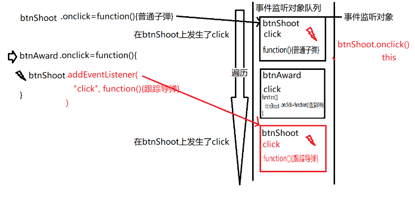 （2）当事件发生时，浏览器自动调动对应元素上的对应的事件处理函数执行 （3）移除事件监听：DOM元素.removeEventListener("事件名",原处理函数对象) 强调：如果一个处理函数可能被移除，那么绑定时就不要用匿名函数，而要用有名称的函数绑定 - DOM事件模型：从事件发生开始，到所有处理函数触发完，所经历的整个过程
包括三个阶段：
（1）捕获，由外向内，依次记录各级父元素上绑定的处理函数——只记录，不执行
（2）目标触发：先触发目标元素上的处理函数
（3）冒泡：由内向外，依次触发捕获阶段记录的各级父元素上的处理函数 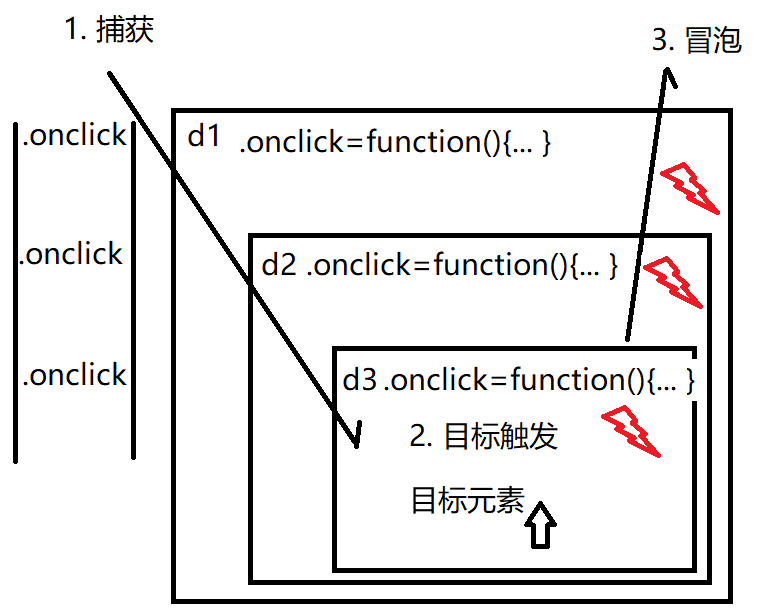 示例1 示例2 - 事件对象event：事件发生时，浏览器自动创建的，保存事件信息的对象
何时使用：
（1）希望获得事件相关的信息时
（2）希望改变事件模型的默认行为
如何使用：
（1）不用自己创建，只要获取即可，浏览器自动创建
（2）取消冒泡：e.stopPropagation()
（3）事件委托（delegate）/利用冒泡：尽量减少事件监听的个数
只要多个平级子元素都要绑定相同的事件时，只要将事件在父元素绑定一次，所有子元素都可通过冒泡原理共享父元素的事件使用！
注意：冒泡委托需要传参e，用e.target代替this，同时执行函数体前要进行条件判定，只有满足条件的元素才能执行父元素的事件处理函数
（4）阻止默认行为：e.preventDefault() 例如：a标签的href="#"默认回到顶部，submit也有默认行为
（5）鼠标位置：3组
①相对于屏幕左上角的位置：e.screenX,e.screenY 适用范围不大
②相对于浏览器显示区左上角的位置：e.clientX,e.clientY,在页面中的位置
③相对于当前事件绑定的元素左上角的偏移量：e.offsetX,e.offsetY
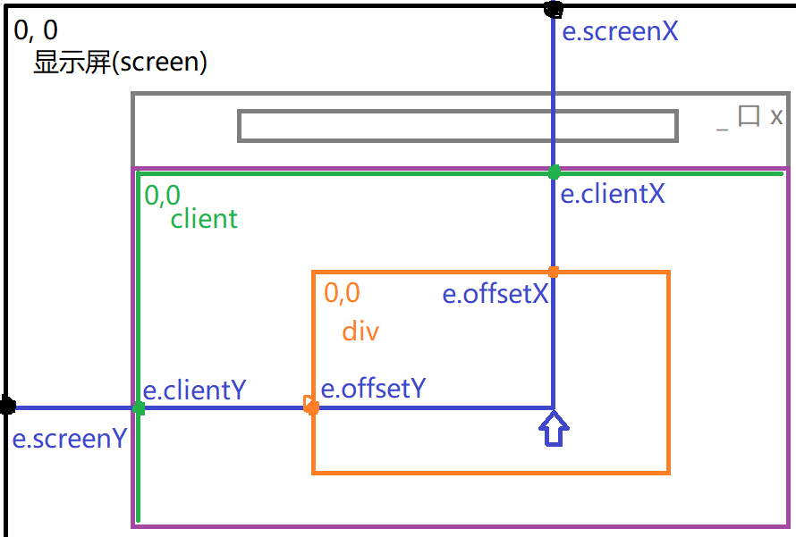 示例 - 页面滚动效果：随页面滚动到指定位置，网页执行相应的操作和变化：
操作：（1）为窗口绑定滚动事件：window.onscroll=function(){...}
(2)获得页面滚动过的距离，也就是页面顶部超出显示文档区上边沿的距离，随时根据滚动过的距离，决定页面发生何种变化
var scrollTop=document.documentElement.scrollTop||document.body.scrollTop
(3)主动修改页面滚动的位置：window.scrollTo(x,y) 示例 - 笔试题：
- f(n,o)_2_3.mov
- event loop in browser.mov和event loop in node js.mov
- DOM优化：
一.查找
如果只要一个条件就可以找到元素，首先按html特征查找：getElementByXXX； 如果查找条件复杂时，按选择器进行查找querySelector() / querySelectorAll
二.尽量减少操作DOM数的次数
1、添加删除：
如果同时添加父元素和子元素，先在内存中将子元素添加到父元素上，再将父元素一次性添加到DOM树
如果父元素已存在页面上，要添加多个平级子元素，则需要先创建一个文档片段对象，先将子元素添加到文档片段上，再将文档片段一次性添加到父元素上
2、修改样式：能一次完成，就不分两句话修改，可以减少对DOM树的重排重绘，比如修改元素的多个样式时，可以用元素.style.cssText=`width:200px;height:100px`
三.尽量减少事件监听的次数，只要多个平级元素要绑定相同的事件时，都要用事件委托
1.将事件绑定在父元素上，所有子元素冒泡共用；
2.用e.target代替this；
3.判断e.target的特征，只有符合条件的目标元素才能执行后续正常的操作
四.项目部署时,采用webpack打包处理,减少项目请求,压缩代码
- jQuery:第三方开发的执行DOM操作的极简化的函数库
注：使用jQuery还是在执行DOM操作，依然做DOM五件事：增删改查 绑定事件 - jQuery原理：
引入jquery就相当于在window中添加了一种新类型jquery，既然是类型，就分为构造函数和原型对象两部分，
constructor负责创建该类型的子对象，function jQuery(){...}
prototype负责保存该类型所有子对象共有的函数
为了同DOM元素区分，一般习惯于在jquery创建的子对象前面加$，以示区分
- $本质：创建一个jQuery子对象
- jQuery三大特点：
（1）一函数两用：无值默认执行获取属性值，有值，即为执行修改属性值操作
（2）自带遍历，对整个jQuery类数组对象，调用一次简化版函数，等效于对类数组对象内所有DOM元素，都调用了一次函数
（3）多数函数都会返回正在操作的jq对象主语，主要是为了便于链式操作
实例 - 查找元素：
（1）按选择器查找元素，jQuery不但支持所有的css选择器，还增加了一批jquery专属���选择器，包括：
:first 第一个 :last 最后一个
:eq(i) 等于i，第i个 :lt(i) 小于i :gt(i) 大于i
:even 偶数个 :odd 奇数个 下标从0开始计算
（2）属性选择器:
实例1 实例3 实例2 css中已有：
[属性名] 选择包含指定属性的元素
[属性名=值][属性名^=值] [属性名$=值] [属性名*=值]
jQuery中新增：[属性名!=值] 选择不包含制定属性的元素以及指定属性不等于指定值的元素，等效于 :not([属性名=值])
（3）内容过滤：用元素文本内容作为查找条件，包含：
:contains(文本) 选择元素内容中包含制定文本的元素
:has(选择器) 选择子元素中包含符合条件的元素的父元素
内容过滤器
(4)可见性过滤：
:visible 选择所有可见的元素
:hidden 选择所有隐藏的元素，只能选择display:none / type="hidden" 的input元素
可见性选择器
（5）表单元素过滤选择器：以表单元素的类型来选择指定的表单元素
:input 选择所有表单元素，包括input select textarea button 等
而input只能选择input元素
:类型名 每种type值都对应着一个专门的选择器，比如:text :password :radio :checkbox .....
表单元素过滤器 （6）按节点间关系查找：如果已经获得一个元素，查找周围附近的元素时
- 父子关系：
DOM：元素.parentNode 元素.children 元素.firstElementChild 元素.lastElementChild
jq: $元素.parent() $元素.children(["选择器"]) $元素.find("选择器") $元素.children(":first-child") $元素.children(":last-child")
实例 - 兄弟关系：
DOM元素：元素.nextElementSibling 元素.previousElementSibling
jq：$元素.next() 之后第一个兄弟元素 $元素.nextAll("[选择器]") 之后所有兄弟元素 $元素.prev() 之前第一个兄弟元素 $元素.prevAll("[选择器]") 之前所有兄弟元素 $元素.siblings(["选择器"]) 除当前元素外，所有平级的兄弟元素
- 父子关系：
- 修改元素：一函数两用，根据有没有参数决定函数执行查找还是修改操作
- 内容
- 获取或修改原始HTML片段：
DOM：元素.innerHTML
jq:$元素.html([新内容])
实例： - 获取或修改纯文本内容：
DOM：元素.textContent
jq：$元素.text([新内容]) - 获取或修改表单元素的值：
DOM：元素.value
jq: $元素.val([新内容])
- 获取或修改原始HTML片段：
- 属性：
- 样式：
- 获取或修改内联样式：
DOM:元素.style.css属性="值"
jq：$元素.css("css属性","值")
简写：控制显示和隐藏： $元素.show() /.hide() 等效于：.css("display","block/none")
使用.css()既可以修改所有样式，也可以获取所有样式
一次只能操作一个css属性
元素的显示隐藏——下拉菜单 - 专门操作class的函数：
$元素.addClass("类名...")
$元素.removeClass("类名")
var bool=$元素.hasClass("类名") 判断一个元素是否包含某个class
简化：如果要反复切换一个元素的class时，可简写为：$元素.toggleClass("类名")
只有明确在两种状态之间来回切换，才能使用toggleClass() 一次有，一次没有
双态按钮
使用“高度动画”实现“手风琴”组件 - 总结：所有修改属性和样式的方法.attr()/.prop()/.css()都可以同时修改多个属性的值，只是要用对象语法，保存多个属性值：例如：
$img.attr({alt:i,src:`img/${i},jpg`}) $img.css({top:100,left:100}) jquery中样式单位可省略
- 获取或修改内联样式：
- 内容
- 添加、删除、替换、克隆
- 添加新元素：
DOM：创建空元素————设置关键属性————将新元素添加到DOM树，
挂载到DOM树，有三种情况：父元素.appendChild(新元素) 父元素.insertBefore(新元素，现有元素) 父元素.replace(新元素，现有元素)
jq:一、用$(`HTML片段`)创建片段中所有元素，如var $a=$(`<a href="http://www.baidu.com">百度一下</a>`)
二、将新元素添加到DOM树上：
末尾插入：$父元素.append(新元素) $新元素.appendTo(父元素)
开头插入：$父元素.prepend(新元素) $新元素.prependTo(父元素)
现有元素之前插入：$现有元素.before(新元素) $新元素.insertBefore(现有元素)
现有元素之后插入：$现有元素.after(新元素) $新元素.insertAfter(现有元素)
替换现有元素：$现有元素.replaceWith(新元素) $新元素.replaceAll(现有元素)
谁在前面返回哪个元素，两种形式是为了方便不同情况下的链式操作。
prependTo - 删除元素：
DOM：父元素.removeChild(子元素)
jq：$任意元素.remove() - 克隆：复制一个和原DOM元素完全相同的一个新元素：var $新元素=$现有元素.clone()
- 专门判断一个元素是否符合条件：
var bool=$元素.is("选择器")
符合选择器条件，返回true，不符合选择器条件，返回false
- 添加新元素：
- 事件绑定：
DOM：灵活的事件绑定：
元素.addEventListener("事件名"，处理函数)
元素.removeEventListener("事件名",处理函数)
jq：共有几种事件绑定的方式：- bind/unbind：单纯代替addEventLiatener()和removeEventListener()
-
事件委托：
DOM：3步
（1）事件绑定在父元素上一次
（2）用e.target代替this
（3）判断e.target是否是想要的
jq：.delegate()/.undelegate()
（1）事件绑定在父元素上一次
（2）this指向当前元素，不用e.target
（3）不用自己写if($target.is("选择器")),而是将选择器作为参数交给delegate()，让其自动判断当前元素是否符合请求
例如：父元素.delegate("选择器条件","事件名",function(){..$(this).}) -
.on/.off() 其实就是bind和delegate的封装重载
重载方式：
（1）如果直接给子元素绑定事件，$元素.on("事件名",处理函数) 等效于bind()/.addEventListener()
（2）如果利用事件委托时，$父元素.on("事件名","选择器条件",function(){.$(this)..}) -
.事件名() 等效于.bind()，无法利用事件委托的优势，只有21种常用的事件被简写，其他的不能用该方法
例如： input事件，当文本框输入一个文字后自动触发，不能用简写，只能用$txt.on("input",function(){...})
操作元素的内容和值
使用属性选择器实现标签页头的切换 21种事件名列表，可极简使用：
blur 失去焦点
change 选中项改变
click 单击
dbclick 双击
focus 获得焦点
input 文本框中每输入一个文字
keydown 键盘按下
keyup 键盘抬起
mousedown 鼠标按键按下
mouseup 鼠标按键抬起
mouseenter 鼠标进入 jq专用
mouseleave 鼠标移出 jq专用
mousemove 鼠标移动
mouseout 鼠标移出 DOM使用
mouseover 鼠标进入 DOM使用
resize 窗口大小改变
scroll 页面滚动
load
- 页面加载后自动执行：
（1）将js代码放在body元素内容的底部
（2）通过绑定窗口的onload事件，onload事件会在所有网页内容（html，css，js，img）都加载完之后自动触发
但是，如果一个页面引入多个js文件，每个window.onload=function(){}，结果会覆盖，只执行最后一个
jq中：$(window).load(function(){...})不用担心被覆盖，但是会在所有网页内容都执行完才触发，有点晚
（3）在onload之前还有一个DOMContentLoaded事件，仅等待HTML和JS加载完就自动触发，比onload早得多
jq中：简化为：$(document).ready(function(){...})
极简为：$(function(){...})，可以简化为箭头函数$(()=>{...})
今后几乎所有jq代码都要放在$(function(){...})中，可代替js中所有代码都写在匿名函数自调用的规则
（4）总结：
①大部分和css和图片无关的初始化操作，比如时间绑定，ajax等都应该首先放在DOMContentLoaded中提前执行
②个别依赖于css和图片的初始化操作才放在window.onload 中执行 - 鼠标事件：
DOM：.mouseover 鼠标进入
.mouseout 鼠标移出
问题：频繁进出子元素，会冒泡触发父元素上的时间
jq：mouseenter/mouseleave鼠标进入/移出 ，不会触发冒泡
简写：因为经常要同时绑定mouseenter和mouseleave一对事件，所以如果成对绑定鼠标进入和移出事件时，可简写为：
.hover{function(){...},function(){...}} 第一个绑定mouseenter，第二个绑定mouseleave
如果刚好可以通过jquery的toggleClass将两个函数改为完全相同的函数，也可以只写一个函数： .hover(function(){...}) 示例 - 模拟触发：虽然没有点在按钮上，也可以触发按钮的事件处理函数
$元素.triggle("事件名") 如果事件正好是21种之一，可以简写为$元素.事件名()
模拟触发实例 - 动画：
（1）简单动画：写死的固定不变的三种动画效果：
显示隐藏：.show() .hide() .toggle()
动画实例0
上滑下滑：.slideUp() .slideDown() .slideToggle()
淡入淡出： .fadeIn() .fadeOut() .fadeToggle()
动画实例1
（2）万能动画：可对任意css属性应用动画效果：$元素.animate({css属性:目标值},duration) 让元素从当前状态，经过指定时间后，缓慢过渡到目标状态
强调：animate()中只写目标值，只支持单个数值的css属性，不支持css3动画和颜色过度等...
示例1 解决方法：排队和并发：
①并发执行，多个css属性同时变化，一个animate()内的多个css属性默认并发执行
②排队执行，多个css属性按顺序依次先后变化，对一个元素先后多次调用animate()函数
注意：每个动画函数都提供了最后一个参数，是一个回调函数，会在动画结束后自动调用
停止动画：$元素.stop(true) 停止当前动画，且清除动画队列
判断一个元素是否在播放jquery动画： :animated 选择器，专门匹配正在播放动画的元素 实例淡入淡出动画原理 实例万能动画 - 类数组对象操作：
（1）遍历：js数组中：arr.forEach(function(elem,i,arr){...})
jq:$(查找结果).each(function(i,DOM元素){...}) 一次取出.前的查找结果集合中的meigeDOM元素，执行相同的操作
遍历实例 （2）查找：js数组： var i=arr.indexOf(val)
jq:var i=$(查找结果).index(元素)
查找实例 - 注意：
css中 transition 和animation 是不是放在开始状态和结束状态的class中都行？
答：transition 必须放在常驻元素的class上，保持对元素的持续监控
animation 必须放在不断变化的class上，如果放在常驻元素上，页面已加载就自动播放 - ajax:
$.ajax({
url:"接口地址",
type:"get/post",
data:{uanme:"dingding",upwd:"123456"},
dataType:"json",//如果服务器端返回的是json，自动将json转换为js可用的对象
success:function(result){
//result就是服务器返回的函数
}
}) - 跨域：一个域名下的网页，向另一个域名下的服务器请求资源
允许跨域：link/script/img
不允许跨域：ajax();
原因：浏览器规定请求回来的响应数据的响应头中记录的远程url必须和当前网页正在打开的url地址相同
同源策略：CORS（Cross Origin Resources Shareing 跨源头资源共享策略） 一个网站的网页中发送的ajax请求，只能访问自己网站提供的数据，不能访问别的网站提供的数据。 - 笔试题：
- $原理：
（1）创建jq对象并查找DOM元素：$("选择器")
（2）创建jq对象直接封装DOM元素：$(this) $(e.target)
（3）创建新的DOM元素：$(`html片段`)
（4）绑定DOM内容加载后就提前执行的事件：$(function(){...}) - 解决跨域的方法：
（1）服务器端CORS跨域：让服务器端在返回数据时，在响应头中伪造来源地址，和客户端浏览器地址栏中的地址保持一致
可以再node.js中res.writeHead(200,{"Access-Control-Allow-Origin":"http://127.0.0.1:8080//客户端地址"})
也可在nodejs安装cors中间件，npm i -save cors，在app.js中设置app.use(cors({
origin:"http://127.0.0.1:8080"//从此所有响应，自动带Access-Control-Allow-Origin：http://127.0.0.1:8080
如果客户端地址发生变化，只更改当前一处origin即可 }))
（2）jsonp跨域：在jquery发送ajax请求时，将$.ajax()中的dataType对应的属性值设置为JSONP
- $原理：
（1）创建jq对象并查找DOM元素：$("选择器")
- Vue:第三方开发的渐进式的基于MVVM设计模式的纯前端js框架
- MVVM：现代web前端开发模式：
- 视图/界面(View)：
包含了HTML和CSS，并增强了HTML/CSS的功能，提供了变量/分支/循环等程序必备功能。 - 模型数据(Model)：
本质是一个data对象，统一保存了该界面所需的所有变量。数据集中保存使其便于维护 - 控制器(ViewModel)：
自动实现模型数据data中的内容和界面view中的内容实时同步。由于已经封装了传统的增删改查功能，所以几乎避免了一切重复操作
- 视图/界面(View)：
- VUE绑定的原理：Vue是如何实现MVVM的？
new Vue()中其实包含了两大子系统：
- 响应系统：实时监控data中变量的变化，并能在变量发生变化时，自动发出通知。
原理：将data放入new Vue()中后,new Vue()自动为每个变量添加了访问器属性。这些访问器属性，直接隶属于new Vue()对象，保护/监控data中的变量，而且所有访问器属性中的set方法中，都内置了通知机制。只要试图修改data中的变量，只能经过访问器属性，自然就会自动触发通知。 - 虚拟DOM树：Vue内存中仅保存可能变化的DOM元素和属性的简化版DOM树
虚拟DOM树优点：- 小：仅包含可能变化的元素和属性
- 快：遍历快
- 自动：虚拟DOM树已经封装了增删改查操作
- 效率高：仅修改个别可能受影响的元素和属性
- 虚拟DOM树原理：
- 形成：首次new Vue()时，传入了el:"#app"参数。然后new Vue()找到#app这个父元素，扫描其内部子元素。边扫描，边创建虚拟DOM树，仅保存可能变化的元素和属性。首次将data中的变量，替换DOM树的{{}}语法
- 当变量发生变化时：首先触发这个变量的访问器set方法，发出通知，通知虚拟DOM树，哪个变量发生变化。然后new Vue()遍历虚拟DOM树，找到可能发生变化的元素和属性，最后利用已经封装好的DOM的增删改查方法，找到发生变化的元素和属性，修改属性。
- 响应系统：实时监控data中变量的变化，并能在变量发生变化时，自动发出通知。
- 绑定语法：在页面中使用{{变量}}标记哪里可能发生变化
{{}}中除了可以放变量，还可编写任意正确的有返回值的js表达式，但不能放程序结构 vue数据绑定 - 指令：为HTML添加增强功能的特殊属性，在HTML中实现了分支、循环等功能。
- v-bind（属性绑定）：专门绑定元素的属性值，可简写为":属性"
>元素 v-bind：属性="js表达式/变量" - 根据条件控制元素的显示，隐藏
- 控制一个元素的显示隐藏：>元素 v-show="条件表达式"
如果条件表达式结果为true，则当前元素显示，原理为去掉display:none
如果条件表达式结果为false，则当前元素隐藏，原理是自动将v-show替换为display:none - 控制两个元素二选一显示隐藏：v-if v-else
>元素1 v-if="判断条件"
>元素2 v-else
判断条件为true，显示元素1，并删除元素2，否则，显示元素2，删除元素1
注：两个元素之间不能插入其他元素，v-else不需要属性值 - 控制多个元素多选一显示隐藏：v-if v-else-if v-else
>元素1 v-if="条件1"
>元素2 v-else-if="条件2"
...
>元素n v-else
原理：从上向下判断每个条件，只要条件不满足就删除该元素，只有满足条件的元素才会保留下来用于显示，如果判断条件走到下一个元素，隐含着上个元素条件肯定不满足 - 总结：v-if vs v-show:
v-show采用display:none隐藏元素——效率高，因为未改变DOM树结构
v-if 采用直接删除元素隐藏元素，效率略低，因为对DOM树进行了修改
- 控制一个元素的显示隐藏：>元素 v-show="条件表达式"
- v-for：反复生成多个相同结构的元素
<要反复生成的元素 v-for="(item,i) of 数组或数值" :key="i"
key的作用:每个v-for元素,都尽量绑定了一个key属性,值为当前元素的小标位置index.
加:key的元素,就有了一个唯一的标识.当数组中某个元素发生改变时,vue就可根据修改元素的下标位置,对应找到相同key值的元素,只更新这个位置相同的元素,别的元素保持不变. v-for示例 - v-on:绑定事件：
<元素 v-on:事件名="处理函数"
可简写为@事件名="处理函数"
注：如果处理函数不需要参数，无需带()；如果需要参数，可加(实参值，...)；如果处理函数需要获得事件对象，只需要在methods中第一函数型添加第一个形参e即可；如果处理函数既需要参数，又需要获得事件对象，需要在绑定时，既提供实参值，又提供$event
$event是vue独有的关键词，代表DOM中的事件对象 v-on示例 - v-html:绑定HTML片段内容；
- 防止用户短暂看到{{}}，如果vue加载慢，可能导致用户短暂看到{{}}语法
- v-cloak:专门用于在new Vue()加载完之前，临时隐藏个别样式，适用于暂时隐藏大片内容结构复杂的元素
问题：v-cloak是彻底隐藏，连结构和样式也看不见 - v-text:保持其他样式和结构，仅内容文本暂时隐藏；
<元素 v-text="表达式" - 总结：今后，尽量用v-text代替{{}}，绑定普通文本
如果字符串需要动态生成，且拼接逻辑比较复杂，首选{{}}+v-cloak
如果父元素中子元素内容结构复杂，向全部隐藏这部分元素及其子元素时，首选v-cloak
- v-cloak:专门用于在new Vue()加载完之前，临时隐藏个别样式，适用于暂时隐藏大片内容结构复杂的元素
- v-once：只在页面加载时，自动绑定一次，之后，即使变量变化，也不自动更新页面
原理：只在首次扫描真实DOM树时，替换一次内容，且并没用将这个元素添加到虚拟DOM树，所以，今后即使变量变化，也不会扫描到该元素 - v-pre：保持内容中的{{}}不被编译
- v-model：双向绑定
只要绑定表单元素的值时，都用双向绑定
可简写为v-model=“变量”
原理：凡是带有v-model的元素，都自动添加事件处理函数：oninput或onchange，在自动绑定的事件处理函数中，内置了自动修改data中变量的方法
- v-bind（属性绑定）：专门绑定元素的属性值，可简写为":属性"
- 监视函数：当一个变量值发生变化时，自动触发的函数。watch：{变量名（）{...}}
watch中的函数，会在data中同名变量的值发生变化时自动触发 - 绑定样式：
- 绑定style属性：如果程序需要频繁单独调整一个元素的单个css属性时，才绑定style属性。
方法：
(1)将元素的style属性当做一个字符串值来绑定；
<元素 :style="变量">
data:{变量:"left:100px;top:200px"}
问题：css属性混在一个字符串中，不便于操作单个css属性
(2)将style作为一个对象来绑定：
<元素 :style="变量">
data:{变量:{left:"100px",top:"200px"}}
或者：
<元素 :style="{left:popLeft,top:popTop}">
data:{popLeft:"100px",popTop:"200px"}
注意：如果元素中包含部分不需要变化的内联样式，style和:style可并存 绑定style属性示例 - 绑定class：如果批量应用一批样式时，首选绑定class
将class属性看做一个对象结构来绑定
<元素 :class="变量">
data:{变量:{class1:true/false,class2:true/false...}}
如果元素中包含部分不需要变化的class，：class和class可并存 绑定class属性示例1 绑定class属性示例2
- 绑定style属性：如果程序需要频繁单独调整一个元素的单个css属性时，才绑定style属性。
方法：
- 自定义指令：当一个常用的DOM操作，Vue没有提供对应的指令时。
（1）向vue中添加自定义指令：
Vue.directive("指令名",{
inserted(domElem){
对domElem执行常用的DOM操作
} })
（2）使用自定义指令：<元素 v-指令名> 自定义指令示例 - 计算属性：不实际保存属性值，仅通过其他属性计算获得属性值
（1）定义计算属性，根据其他属性的值，动态计算获得自己的属性值
computed:{
属性名（）{//计算属性本质是一个函数，但是，函数名是一个名词
return 计算结果
} }
（2）使用计算属性进行绑定
computed VS methods：
methods中的函数，调用几次，就需要重复计算几次，如果反复使用，效率低
computed中的计算属性，只在首次使用时，计算一次，只有计算属性依赖的变量值发生变化，才重新计算一次，并重新缓存结果，可重复使用，效率高
总结：如果仅希望使用计算结果这个值，首选计算属性
更希望执行一系列操作流程时，首选函数
计算属性示例 - 过滤器：filter：专门对原始类型的值进行加工后再显示的函数
使用步骤：（1）添加过滤器：Vue.filter("过滤器名",function(oldVal){return newVal})
(2)使用过滤器：在绑定语法中：{{变量|过滤器}} 过滤器示例1
过滤器还可以加参数：
（1）添加过滤器时，额外多写几个形参
Vue.filter("过滤器名",function(oldVal,其他形参...){
return 根据不同的实参值返回不同的结果 })
（2）使用过滤器时，可加()传入实参值
绑定语法中：{{变量|过滤器(实参值,...)}}
多个过滤器可以连用
过滤器示例2 - axios：专门发送ajax请求的js函数库
使用前提：配置main.js：
（1）下载axios库：npm i axios -S
（2）引入axios库：import axios from 'axios'
（3）设置属性发送ajax请求时保存session信息：axios.defaults.withCredentials=true
（4）设置ajax请求基础路径：axios.defaults.baseURL="http://服务器地址"
（5）将axios注册vue实例：Vue.prototype.axios=axios
使用方法:
（1）发送get请求：axios.get(url,{params:{参数：值}}).then(res=>{res.data})
（2）发送post请求：axios.post(url,Qs.stringify({变量1：值1，变量2：值2})).then(res=>res.data)
关于post请求，本来需要查询字符串，但是借助qs.min.js工具，Qs的stringify函数可以将对象转换为查询字符串 axios示例 - 组件：component：拥有专属的HTML,CSS,JS和数据的可重用页面独立区域，组件=模板+脚本+样式
如何使用组件：
（1）创建一个组件：
Vue.component("组件名",{
template:`HTML片段，必须包含在一个唯一的父元素内`//模板
data(){
return {变量:值,...} }
methods:{函数},watch:{监视函数},computed:{计算属性} })
（2）反复使用组件，组件名就是标签名，如果组件名有多个单词组成，不要使用驼峰命名，可用-分割多个单词 -
- Vue到底是什么？
答：Vue是一个类型，包括两部分
- 构造函数：function Vue({el,data,methods,...}){...}
整个项目只有一个根组件对象监控和扫描整个页面，此外还可以有页面组件、全局组件、子组件，这些组件本质上都是Vue的子函数 - 原型对象：Vue.prototype 负责保存所有组件中都可以使用的对象或函数
- 构造函数：function Vue({el,data,methods,...}){...}
- 页面组件、子组件、全局组件，三者本质上都是子组件;
页面组件：包括一个完整页面功能的组件
全局组件：多页页面共用的功能组件
子组件：必须包含在父组件内的组件
- Vue到底是什么？
答：Vue是一个类型，包括两部分
- 组件化开发：便于分工和协作 松耦合
组件分类：根组件new Vue() /全局组件（可以再任何页面的任何位置，没有限制）/子组件（仅能在一个指定的父组件中使用）
子组件的使用：
（1）创建子组件：内部结构和全局组件相同，但是要将全局组件降级为普通的js对象，且子组件的对象名必须用驼峰命名
（2）为父组件添加components：父组件：{template：``，data(){},components:{子组件对象名}}
组件间传参：见笔试题2 - SPA:Single Page Application:单页面应用：一个应用程序中，只有一个完整的HTML页面，其他所谓的页面，其实都是一些较大的组件而已。所谓的页面跳转，其实是更换不同的组件加载而已
SPA和多页面 比较：
（1）请求次数： 多页面应用：每次切换页面都要重新请求服务器。 SPA：在首次请求页面时，把所有的组件一起下载下来。——减少了请求次数，减轻了服务器负担，避免了切换页面等待时间，提高了用户体验。
（2）加载效率： 多页面应用：每更换一次页面都要重建整颗DOM树，效率低。 SPA：只替换页面中部分内容，无需重建DOM树，效率高
（3）公共资源：bootstrap.css/js jquery.js等 多页面应用： 每个页面都要重新请求一次公共资源，增加了请求次数，增大了服务器负担，增加了用户等待时间。 SPA:只在唯一的index.html中首次加载时下载一次。减少了请求次数，减轻了服务器负担，避免了切换页面等待时间，提高了用户体验。
（4）页面过渡效果： 多页面应用： 无页面过渡效果。 SPA:因为所有组件都是以元素方式保存在客户端，所以可以通过定位，CSS3变换的方式实现页面组件间的切换效果。
（5）首屏加载效率——SPA的缺点 多页面应用：只需要在家第一个页面的内容，首屏加载快。 SPA：首屏就要下载所有组件内容，所以首屏加载慢。 解决方法：配合打包工具webpack，让组件的js文件异步延迟加载：先加载首屏组件，其他组件js在后台异步下载，不影响首屏下载速度。 - 如何实现SPA：
- 创建一个唯一完整的HTML页面，应该包含new Vue()
- 创建多个组件，包括页面组件，全局组件，子组件
- 创建路由字典和路由器对象
- 将所有页面组件、路由器都引入唯一完整的HTML中，还要将路由器对象，装入new Vue()中
- 路由跳转：
- 在HTML中：<router-link to="/相对路径">文本 会自动翻译为a标签
- js中：this.$router.push("/相对路径")
- 路由传参：
- 接收参数的页面的路由字典中要配置参数{path:'/details/:lid',component:details,props:true}
props:true 让url中参数自动称为props的自定义属性 - 在要接收参数的目标组件中，添加与路有参数同名的自定义属性变量；props:["lid"]
props中的变量可自动接到url中的值，在对应页面中像普通变量一样使用 - 跳转时，在相对路径之后加"/参数值"
注意：不要带？ 且 不要写参数名=参数值 且 /直接跟参数值
- 接收参数的页面的路由字典中要配置参数{path:'/details/:lid',component:details,props:true}
- 脚手架：已经包含标准项目文件夹结构和核心功能代码的半成品项目。
脚手架生成：
（1）全局安装生成脚手架代码的工具 npm i -g @vue/cli
（2）用脚手架生成工具为本次项目生成一套脚手架结构代码 vue create 项目名 - 生命周期，钩子函数:每个组件（根组件、全局组件、子组件）都有自己的一套加载过程————组件的生命周期
四个阶段：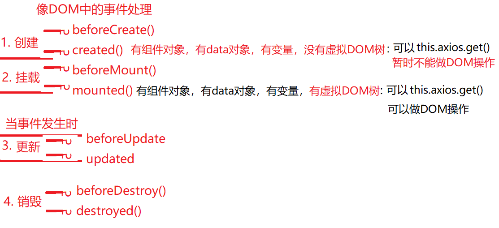- 创建create：仅创建了new Vue()或组件对象，同时创建了组件对象中的data对象，包括beforeCreate()和created(){}
- 挂载mount：开始臊面真实DOM树，形成虚拟DOM树，并首次替换绑定内容为data中的变量值。包括beforeMount()和mounted()
- 更新update：在任何位置修改data中的变量值，都会触发更新阶段。包括beforeUpdate()和updated()
- 销毁destory：只在调用$destory()函数，销毁组件时，才触发销毁阶段.包括beforeDestory()和destoryed()
- vue-router钩子函数:基本上所有的路由钩子函数都有三个参数to from next,(afterEach不传next()函数)
- 全局钩子:主要包括beforeEach和afterEach,作用域全局,一般用来判断权限以及页面丢失时需要执行的操作
- 单个路由里的钩子:beforeEnter和beforeLeave,主要用于写某个指定路由跳转时需要执行的逻辑
- 组件路由:主要包括beforeRouteEnter和beforeRouteUpdate和beforeRouteLeave
- $route和$router:
$router:路由器对象，专门执行跳转动作的对象
$route :封装地址栏信息的对象，是保存数据的，不执行操作。 - 配置axios的基本url地址： 在main.js中设置axios.defaults.baseURL="http://服务器地址"
- 笔试题：
- this的汇总
- 普通函数或者匿名函数自调中，this指向window，严格模式下：this指向undefined
- obj.fun() fun中this指向obj
- new Fun() Fun中this指向正在创建的新对象
- 原型对象中的函数里的this指向将来调用当前函数的.前的当前类型的子对象
- btn.onclick=function(){...} this指向btn
- 回调函数this指向window 所有的回调函数，真正被调用时，前面是没有任何对象.前缀的
所以，通常如果希望回调函数中的this不指window，而是跟外部的this保持一致，都要改为箭头函数 - ES6模块中,this指向undefined
- jQuery中的回调函数，this指向当前正在操作的DOM元素
- vue中的一切this都指向当前new Vue()对象，所以vue.js中访问任何变量都要加this.变量名。但是html中绑定变量名不需要加this
- react中事件处理方法中this默认指向undefined:因为JSX中,事件处理方法赋值时不是函数调用,而是函数的引用赋值-----this指向不再指向当前组件对象,而是指向当前ES6模块中的全局this----值为undefined
- 组件间传参：props down，event up，后续补全
- 父传子
- 子传父
- 兄弟间传参
- 前端三大框架的区别有哪些？
- 前端可用的异步请求方案有哪些？各自的利弊?
答:(1)原生XHR 本质:XHR 浏览器支持的原生技术 基于回调方式处理响应
(2)jQuery.ajax() 本质:XHR 比原生简单,也是基于回调方式处理响应
(3)axios 本质:XHR 比原生简单,基于Promise处理响应,可以排队,并发,撤销
(4)Angular HttpClient 本质:XHR 比原生简单,基于"观察者模式"处理响应,可以排队,并发,撤销
(5)Fetch 本质:不再是XHR,而是W3C提出的新技术,有望取代XHR 比XHR从更本上就更先进,天然抑郁Promise,目前浏览器还有兼容性问题 - Vue.js中的路由跳转机制有哪些?(Hash法和History法的区别)
答:(1)hash法:只需修改url中的hash部分
(2)history法:需要修改window.history对象,从而支持浏览器自带的后退按钮
注:Angular中路由跳转机制只有history法 - javascript的设计模式?21种?
- 如何解决不同浏览器兼容问题?
- 前端优化方法有哪些?
- 数组去重,四种以上
- vue.router的钩子函数
- this的汇总
- pc端项目和移动端项目区别：
（1）屏幕宽度：pc端 w>992px 移动端 w<992px
（2）操作方式：pc端：鼠标键盘 移动端：手指
（3）事件类型：pc端：click/keyup/keydown 移动端：touchstart/touchmove/touchend - 使用mint-ui组件库（配置）：
（1）下载mint-ui npm i mint-ui -S
main.js 负责引入和配置所有第三方库模块
（2）引入组件库（按需引入/完全引入）import MintUI from "mint-ui"
（3）单引入组件库样式文件：import "mint-ui/lib/style.css"
（4）注册：Vue.use(MintUI)
（5）挑选组件库中组件添加到自定义组件中 - mint-ui组件库之一—— ——Toast：功能：显示一个短消息提示框
作用：删除成功，登陆成功，用户名或密码错误
语法：js直接调用：this.$toast({message:"提示文字"})
图标：由于默认图标外观不满足商业项目需求，所以要从专业图标网站下载图标
使用步骤：（1）下载代码，阿里巴巴www.iconfont.cn
（2）在src创建目录font保存图标字体
（3）在main.js引入图标字体文件中的css文件 import "./font/iconfont.css"
（4）使用：$toast({iconClass:"iconfont icon-xxxx(对应图标名称)"}) - mint-ui组件库之二—— ——messagebox ：功能：交互提示框
语法：js直接调用：
(1)消息框：this.$messagebox("标题","内容")
(2)确认消息框：this.$messagebox.confirm("提示消息").then(res=>{确认回调函数}).catch(err=>{取消回调函数})
(3)输入框：this.$messagebox.prompt("请输入年龄").then((value)=>{...}) - mint-ui组件库之三—— ——表单：输入框
语法：<mt-field label="标题 placeholder="占位符" v-model="输入内容" type="text></mt-field> - mint-ui组件库之四—— ——表单：开关组件
语法：<mt-switch v-model="bool" @change="修改开关状态" ></mt-switch> - mint-ui组件库之五—— ——表单：单选框列表组件
语法：<mt-radio v-model="绑定用户选中值" title="标题" :options="[选项列表]" ></mt-radio> - mint-ui组件库之六—— ——表单：复选框列表组件
语法：<mt-checklist v-model="绑定用户选中值" title="标题" :options="[选项列表]" ></mt-checklist> - mint-ui组件库之七—— ——面板
创建面板方式：一个父面板中多个子面板
语法：
父面板：<mt-tab-container v-model="active"></mt-tab-container>
子面板1：<mt-tab-container-item id="tab1"></mt-tab-container-item>
子面板2：<mt-tab-container-item id="tab2"></mt-tab-container-item>
子面板3：<mt-tab-container-item id="tab3"></mt-tab-container-item>
当active变量中保存tab1时显示tab1对应子面板 - mint-ui组件库之八—— ——底部导航条
点击按钮时显示指定面板
语法：
<mt-tabbar fixed v-model="active">//父元素 fixed将tabbar固定在底部导航条
<mt-tabbar-item id="tab1">//子元素1 按钮
<img src=""/> 图片
文字 按钮中的文字
</mt-tabbar-item>
<mt-tabbar-item id="tab2">//子元素2 按钮
<img src=""/> 图片
文字 按钮中的文字
</mt-tabbar-item>
...
</mt-tabbar> - 父子组件调用及数据传递
父组件调用子组件：
（1）引入子组件： import 子组件 from "子组件相对地址"
（2）注册子组件并起名字：components:{"子组件名字"：子组件对象}
（3）在父组件模板中调用：<template><子组件名字></子组件名字> </template>
父组件向子组件传递数据：
（1）创建子组件，显示数据<template>{{msg}}</template>
props：{//声明接收父组件数据
msg:{default:""}}//接收数据名：默认字符串 ""表示接收数据格式为字符串
（2）创建父组件，调用子组件并传参<template><子组件名字 msg="要传递的数据"></子组件名字> </template> - session会话：用户在网页上的一个操作过程，三个状态：
（1）会话开始：用户打开某网站第一个网页
（2）会话中：用户打开网站多个网页
（3）会话结束： 用户关闭浏览器
session对象是服务器端用来保存此次会话中用户专用数据（uid）的对象
注意：sesson对象保存在服务器端，会话结束，session中保存的数据丢失 - session开发流程:
服务器端:app.js:
(1)下载第三方模块 npm i -S express-session
(2)配置app.js: const session=require('express-session')
server.use(session({secret:"128位字符串",resave:true,saveUninitialized:true}))
secret:安全字符串,session编号加密;resave:每次请求是否更新元数据;saveUninitialized:保存初始化数据
(3)创建session对象并保存数据:req.session.uid=uid
(4)获取session对象中的值:var uid=req.session.uid - Vuex:专门为vue应用程序实现数据状态管理的组件.
特点:(1)采用集中式存储管理将所有共享数据集中保存
(2)当其中一个组件对数据进行修改vuex使用一种同步方式,通知所有使用其数据的组件,一并更新数据,完成数据状态vuex的下载安装与配置:ex:
(1)下载 npm i Vuex
(2)配置main.js:
----引入vuex第三方模块 import vuex from "vuex"
----注册vuex Vue.use(vuex)
----创建存储对象 var store=new Vuex.Store({...})
----将存储对象添加到vue对象中作为属性:new Vue({...store...})var store=new Vuex.Store({ state:{age:23},//集中保存共享数据 getters:{},//集中操作数据:获取数据函数 mutations:{},//集中操作数据:修改数据函数 actions:{}//集中操作数据:异步修改数据函数 }) 组件中: 获取数据:{{$store.getters.函数名}}//不用加() 修改数据:this.$store.commit("函数名"[,修改值]) //[]表示可加可不加 调用actions中定义的异步修改数据方法:this.$store.dispatch("函数名") - 小程序生命周期:一个组件从创建开始到使用中最后被销毁的过程
--onLoad 事件:组件创建成功并且加载完成触发一次.此事件触发时发送请求获取数据,获取其他组件传递数据
--onReady 组件渲染成功 触发一次
--onShow 组件显示完成
--onHide 组件隐藏完成
--onUnload 组件销毁 - 面试题：
- 前端请求方式有哪些？
答：
- get：客户端想获取服务器数据
- post：客户端想发数据给服务器
- put：客户端想更新服务器中数据
- delete：客户端想删除服务器上数据
- head：客户端想获取服务器数据，只要响应头不要响应主体
- trace：追踪路径
- options：备选项
- connect：测试连接
- 前端请求方式有哪些？
答：
- video:视频
标准语法:<video src="视频路径"> 您的浏览器版本太低,请升级!</video>
兼容语法:<video> <source src="x.mp4"/> <source src="x.flv"/>
</video>
(1)常见属性:controls 显示播放视频原生控件(兼容性差)
loop 循环播放 muted 静音播放 preload 预加载策略{none:不预加载任何数据;metadata:只预加载元数据;auto:加载元数据并加载一定时长视频(默认)}
autoplay:自动播放视频 poster:在播放视频之前显示一张图片
(2)js常见属性方法:必须通过js程序获取'视频对象'才能执行如下属性方法
volume:1(音量0~1) playbackRate 回访速率(播放速度,大于1快放,小于1慢播)
play() 播放视频 pause() 暂停播放 paused 表示当前视频播放状态 ( true 表示视频暂停 false表示视频正在播放)
(3)属性在video事件:canplaythrough:当视频加载结束后可以播放时触发事件(一次) duration:视频时长(s) ended 当前视频播放结束(一次) timeupdate 视频正在播放中(多次 4次/s) currentTime 当前播放时间点
(4)属性在video样式:object-fit:此属性指定视频在区域内如何显示;fill 填充 默认值:将视频拉伸操作填满整个父元素
contain 包含 保持原有视频比例,父元素有空白区域
cover 覆盖 保持原有视频比例,宽高至少有一个与父元素一致 - 绘图:将复杂数据转换为图形呈现给用户
网页中绘图技术有三种:
(1)svg:用户线段组件图形,针对2D矢量图,特点:矢量图可以无限放大和缩小且不失真,缺点:颜色不丰富
(2)canvas:用像素点组件图形,针对2D位图,缺点:位图不适合放大和缩小并且失真,优点:颜色细腻
webgl;3D位图 - canvas:
一.创建画布:- 通过标签创建画布:<canvas id="c1" width="500" height="400" ></canvas >
注意:画布宽高一定用js或属性添加,不能用css样式赋值 - 通过js获取画布: var c3=document.getElementById("c3")
- 通过画布获取画笔:var ctx=c3.getContext("2d")
二.绘图:矩形
(1)绘制空心矩形(描边):ctx.strokeRect(x,y,w,h) //x,y 空心矩形左上角位置 w,h 空心矩形宽高
(2)绘制实心矩形(填充):ctx.fillRect(x,y,w,h)
(3)设置实心样式:ctx.fillStyle="#fff"
(4)设置空心样式:ctx.strokeDtyle="#000";
(5)清空矩形范围内所有元素:ctx.clearRect(x,y,w,h)
(6)设置透明度:ctx.globalAlpha=0.3;
三.文本:
(1)ctx.strokeText(str,x,y) 绘制描边文字 str 绘制文本 x,y 字符串左上角位置
(2)ctx.fillText(str,x,y) 绘制填充文字
(3)ctx.font="19px SimHei" 设置文本大小/字体
(4)ctx.textBaseline="top" 调整文本基线(top/bottom/alphabetic)
四.路径:绘制不规则图形;
path:路径,由多个坐标点组成任意图形,图形本身不可见,可以描边或填充
(1)ctx.beginPath() 开始一条新路径
(2)ctx.moveTo(x,y) 画笔移动到指定点
(3)ctx.lineTo(x,y) 从当前点到指定点
(4)ctx.stroke() 描边
(5)ctx.fill() 填充
(6)ctx.closePath() 闭合一条路径
(7)ctx.arc(cx,cy,r,start,end) 绘制一条圆拱形 cx,cy圆心 r 半径 start 开始角度 end 结束角度 不使用常用角度完成设置,使用弧度设置.0~2PI
五.图像:将图片绘制在canvas画布上
(1)创建图像对象: p3=new Image();
(2)下载图像: p3.src="p3.png"
(3)为图片绑定事件下载成功 p3.onload=function(){...}
(4)绘制图片 ctx.drawImage(p3,x,y)
(5)绘制图片 ctx.drawImage(p3,x,y,w,h)
六:变形:绘制时对图片执行旋转操作--rotate(deg)
注:旋转的是画笔对象 旋转轴心在画布原点 旋转角度会有累加操作 deg不同角度弧度
translate(x,y) 移动原点到指定位置
当画布上绘制一个以上元素时必须使用--save() 保存画笔状态 --restore() 恢复到画笔保存时状态 - 通过标签创建画布:<canvas id="c1" width="500" height="400" ></canvas >
- canvas绘图--变形(弹幕模式)
- H5新特性--智能定时器:requestAnimationFrame,主要用于动画和游戏中
- H5新特性:svg
canvas VS svg
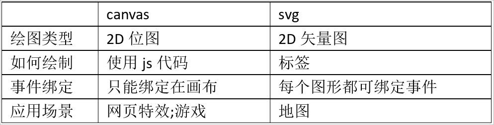
svg图形创建流程:
(1)创建画布标签<svg id="s1" width="560" height="400">...</svg>
(2)添加圆环标签<circle cx="" cy="" r="" fill="" stroke=""></circle> 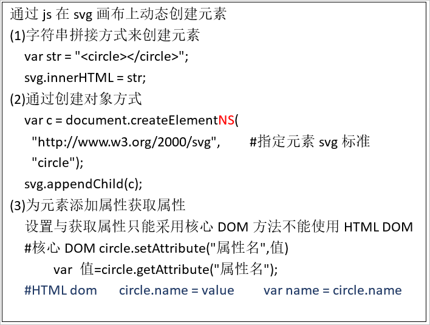
一.折线:多个坐标点组成一条折线 <polyline points="x1,y1 x2,y2 x3,y3..." stroke="" stroke-width=""></polyline>#points 一组坐标点
二.渐变特效对象:从一种颜色慢慢过滤到另一种颜色:使用方法:
(1)创建渐变对象<defs>
<defs>
<linearGradient id="g3" x1="" y1="" x2="" y2="">
<stop offset="" stop-color="" />
</linearGradient></defs>
x1,y1 起点坐标 x2,y2 终点坐标 stop 颜色点 offset 偏移量 0 30% 100% stop-color 颜色点
(2)在指定图形应用
<rect fill="url(#g3)"></rect> <ANY fill="url(#g3)"></ANY>
三.滤镜,特效对象,模糊滤镜
<defs>
<filter id="g3">
<feGaussianBlur stdDeviation="数字" />
</filter></defs>
数字:模糊级别1~10
调用:<ANY fill="url(#g3)"></ANY> - H5新特性:echarts:百度提供的第三方绘图库,快速创建功能简单外观复杂的图像
使用步骤:
(1)下载:百度 echarts进入官网下载
(2)创建容器(显示图形):<div id="main" style="width:500px;height:400px"></div>
(3)加载echarts.min.js //此文件中有echarts全局对象
(4)程序:获取容器 var main=document.getElementById("main")
(5)创建echarts对象: var mychart=echarts.init(main)
(6)创建options选项:var option={} //需要将数据添加到option
(7)将options添加到echarts对象中 mychart.setOption(Option表单元素中的下拉选) - H5新特性:拖放API(网页)
应用:--PC端 拖动上传文件 --移动端 自拍 相册
拖动源对象(会动)---会触发三个事件:dragstart 拖动开始 drag 拖动中 dragend 拖动结束
拖动目标对象(不会动)---会触发四个事件 :dragenter 拖动进入 dragover 拖动悬停 dragleave 拖动离开 drop 拖动释放 - H5新特性:Web Worker:
程序 vs 进程 vs 线程
程序:指可以被CPU执行的代码,程序存储在磁盘上
进程:指将程序调用内存中并且分配指定空间,在内存中的程序
线程:进程内部是多个线程组件
标准语法: var w=new Worker("js任务路径") //创建worker对象,创建新线程执行js任务
Worker程序实现数据传递:
html页面中UI发送数据:var w=new Worker("js/05.js"); w.postMessage("123")
05.js页面中Worker接收数据:onmessage=function(e){e.data即为接收到的UI发送的信息} - H5新特性:websocket:多对多聊天室
websocket工作方式:广播和收听;适用范围:金融/弹幕/聊天室/客服
多借助于第三方模块 socket.io 多对多聊天室 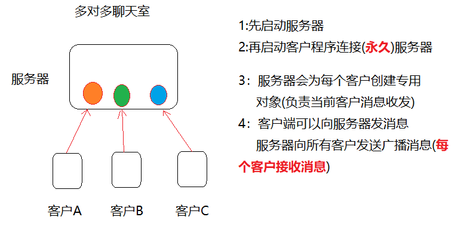
下载方式:服务器端 npm i socet.io 客户端 引入https://cdnjs.cloudflare.com/ajax/libs/socket.io/2.0.3/socket.io.js
websocket分两部分创建:- 服务器端程序:
(1)创建web服务器:var app=require("http").createServer()
(2)创建socketio服务器端对象:var io=require("socet.io")(app)
(3)监听端口:app.listen(3000)
(4)为io对象绑定事件connection(当客户连接服务器时触发此事件)
io.on("connection",(socet)=>{socket为当前客户创建专属客服}) - 客户端程序:
(1)创建socket对象并且连接服务器:var clientSocket=io("ws://127.0.0.1:3000") --ws:websocket
情景模拟:
----客户端发送数据给服务器(一对一):
socket.io发送与接收数据采用方式为:事件绑定和事件触发机制
服务器端(收):socket.on("message",(data)=>{console.log(data)})
客户端(发):clientSocket.emit("message","内容")
----服务器端发送数据给客户端:
客户端(收):clientSocket.on("server",data=>{...})
服务器端(发):socket.emit("server","内容")
----广播消息:服务器向所有客户发送消息:
服务器发:io.emit("list","内容")
客户端收:clientSocket.on("list",data=>{...})
----服务器端默认时间:disconnect:当客户端关闭浏览器默认触发事件(客户端离开)
- 服务器端程序:
- H5新特性:webStorage:在客户端浏览器中保存用户专用数据
客户端存储方式 VS 服务器端存储方式
客户端:不安全,数据量少;① cookie 兼容性好,但操作复杂,存储上限1kb ② Flash 依赖flash播放器 ③ WebStorage 操作简单,上限8MB,兼容性差 ④ IndexDB 不标准
服务器端:安全,海量,高速查询;① 数据库 ② session对象 ③ 文件data.txt ④ 内存数据库.文档数据库等
WebStorage存储数据依赖两个对象:
(1)sessionStorage:对象存储范围在当前会话中,当前会话中所有网页都可以使用sessionStorage保存,会话结束,数据丢失
(2)localStorage:此对象数据永久保存
WebStorage操作数据方法:sessionStorage和LocalStorage通用
(1)保存数据:sessionStorage.setItem(key,value) key键 value值
(2)获取数据:var value=sessionStorage(key)
(3)删除指定数据:sessionStorage.removeItem(key)
(4)清空所有数据:sessionStorage.clear()
(5)数据长度:sessionStorage.length - 面试题：
- Angular核心概念一:模块Module--NG中模块是一个抽象的容器,用于对组件进行分组
- Angular核心概念二:组件Component--组件:一段可以反复使用的页面片段.
组件Component = 模板(Template) + 脚本(Script) + 样式(Style)
NG中,任何一个组件都必须声明在模块中
自定义组件步骤:
(1)创建组件class @Component({selector:"myc01",template:"元素标签"}) export class MyC01Component()
(2)在某个模块中注册组件class:在app.module.ts中: declaration:[AppComponent,MyC01Component]
(3)使用已经注册过的组件:在app.component.html中,`<myc01></myc01>`
Angular提供的创建组件的简化工具:[npx] ng generate component 组件名
简化为 [npx] ng g component 组件名 - Angualr核心概念之三:数据绑定:
- HTML绑定:{{NG表达式}}
{{}}中可以执行算术运算/比较运算/逻辑运算/三目运算/调用函数等,但是不能使用创建对象和JSON序列化 - 属性绑定:[]
形式1:直接在属性上用{{}} For: <p title="{{msg}}"
形式2:使用[]做属性绑定 For: <p [title]="msg" - 事件绑定:()--(click)="add()" 注意:事件名用()包裹,处理函数名后必须加()
- 指令绑定:
(1)循环绑定:*ngFor="let list of lists;let i = index/index as i"
(2)选择绑定:
*ngIf="布尔表达式"
*ngIf="布尔表达式;else ELSE块编号" <ng-template #ELSE块编号> ...</ng-template>
(3)样式绑定:[ngStyle]="obj" ngStyle绑定的值必须是一个对象,对象属性就是样式名
(4)样式绑定:[ngClass]="obj" ngClass绑定的值也必须是一个对象,对象属性时CSS class名,属性值为true/false
(5)特殊的选择绑定:[ngSwitch]="表达式" > *ngSwitchCase="值1" + *ngSwitchCase="值2" +... +*ngSwitchDefault
(6)双向数据绑定:[(ngModel)]="变量"
注意:(1)如果想直接监视模型数据改变,可以绑定ngModelChange事件 (ngModelChange)="doChange()"
(2)ngModel指令不再CommonModule模块中,而在FormsModel中,所以使用前必须在主模块中导入该模块 - Angular中指令分为三类:
(1)组件指令:NG中Component继承自Directive
(2)结构性指令:会影响DOM树结构,必须使用*开头 *ngIf *ngFor *ngSwitchCase *ngSwitchDefault等
(3)属性型指令:不会影响DOM结构,只会影响元素外观或行为,必须用[]绑定 [ngSwitch] [ngClass] [ngStyle]等 - 定义自定义指令:ng g directive 指令名,自定义指令都是作为元素属性来用
- HTML绑定:{{NG表达式}}
- Angular核心概念四:管道Pipe,性质等同于vue的过滤器Filter
自定义管道步骤:
(1)创建管道class,实现转换功能:@Pipe({name:'sex'}) 导出管道:export class SexPipe{ transform(oldval){ ...return newval}} transform方法除了oldval还可以结构其他参数,调用管道时用冒号为这些参数赋值
(2)在模块中注册管道:在app.module.ts中:declarations:[SexPipe]
(3)在模板视图中使用管道:{{e.gender | sex[:'en']}}
Angular中提供了部分预定义管道可以直接使用,lowercase/uppercase/titlecase/slice:a:b显示字符串中下标a到b部分/json 把对象序列化为json字符串/number:'4.1-4'把数字转换为具有指定整数位和小数位的字符串/currency[:'$']/data[:'yyyy-MM-dd HH:mm:ss'] 具体使用方法参照手册 - Angular核心概念五:服务和依赖注入
Service:服务,Angular认为:组件是与用户交互的一种对象,其中的内容都应该与用户操作有关系,而与用户操作无关的内容都应该剥离出去,放在服务对象中,为组件服务,如:日志记录,计时统计,数据服务器的访问...
创建服务对象步骤:
(1)创建服务对象并指定服务提供者:@injectable({provideIn:'root'}) export class LogService{}
(2)在组件中声明依赖,服务提供者会自动注入进来,组件直接使用服务对象即可:constructor(private log:LoginService){...//log变量就会被注入LogService实例}
Angular官方提供的服务对象HttpClient Service:HttpClient服务对象用于向指定的URL发起异步请求
使用步骤:
(1)在主模块中导入HttpClient服务所在的模块imports:[...,HttpClientModule]
(2)在需要使用异步请求的组件中声明依赖于HttpClient服务对象,就可以使用该对象发起异步请求了:constructor(private http:HttpClient){}
(3)调用HttpClient实例实现异步请求:this.http.get(url).subscribe((res:any)=>{}) - 服务对象的作用范围:
声明服务提供者的方式:
(1)在根模块中提供服务对象--在整个应用中服务是单例:@Injectable({provideIn:'root'}) export class TimerService{}
(2)在组件中提供服务对象--在每个组件实例中服务都有一个实例:@Injectable() export class TimerService{} @Component({...providers:[TimerService]}) export class LoginComponent{}
注意:项目中只要服务对象中有属性,只能用方法2,否则推荐方法1 - TypeScript:由微软编写的一门基于JS又高于JS的强类型编程语言,浏览器不支持TS,TS源码需要编译为js才能在浏览器中使用
使用步骤:
(1)下载TS编译器:npm i -g typescript
(2)编写.ts文件,使用编译器转化为.js tsc hello.ts---> hello.js
TS扩展特性:
(1)TS是强类型语言:变量,形参,函数都可以声明类型,常用的数据类型关键字:string/boolean/number/any/number[]/Object/Date/void
如uname:string="dingding" age:number=13 f1(n1:number):boolean{return true}
(2)TS对属性和方法定义了三种访问修饰符:private:私有的,只能在本类内部使用 protected:受保护的,只能在本类内部和子类内部使用 public:公共的,可以再内部和外部使用
一般情况下,class内属性通常设置为private 方法设置为public
(3)访问修饰符的特殊用法:
class emp{ private age:number; constructor(age){this.age=age}} 可简写为 class emp{ constructor(private age:number){...} }
(4)面向对象变成核心概念--class(类)和interface(接口)
interface:接口,是一种特殊的类,规范"要求某个class必须具备xxx方法,如管道类必须提供transform方法"
(5)装饰器 - NG中组件的生命周期钩子函数
调用顺序:
(0)constructor() 组件对象被创建了
(1)ngOnChanges() 组件绑定的属性值发生变化
(2)ngONInit() 组件初始化完成--同vue中的mounted
(3)ngDoCheck() 组件检查到系统对自己的影响
(4)ngAfterContentInit() 组件内容初始化完成
(5)ngAfterContentCheck() 组件内容发生变化需要检查
(6)ngAfterViewInit() 组件的视图初始化完成
(7)ngAfterViewChecked() 组件的视图发生变化需要检查
(8)ngOnDestory() 组件即将被从DOM树上卸载,适合执行一些资源释放的语句 - 父子间组件传参:props down,events up
(1)父=>子:父组件通过"子组件的自定义属性"向下传递数据给子组件:
①parents.ts:父组件创建数组 uname="aabb"
②parent.html:父组件将自己的数据绑定给子组件的属性:<child [childName]="uname"
③child.ts:子组件定义扩展属性:@Input() //声明为"输入型属性" private childName=null
④child.html:子组件使用自定义属性:<p>{{childName}}
(2)子=>父:子组件通过触发特定的事件(其中携带数据),把数据传递给父组件(父组件提供事件处理方法)
①child.ts:自定义事件发射器--输出型属性 @Output(); private cryEvent=new EventEmitter()
②child.ts:在某个时刻发射事件:this.cryEvent.emit(子组件想传递的数据)
③parent.html:监听子组件的时间 <child (cryEvent)="doCry($event)"
④parent.ts :接收子组件传递的数据 doCry(e){ e就是子组件传递的数据}
(3)父子组件传递数据的简单方法:父组件直接使用子组件的引用--视图子组件 ViewChild
parent.html:使用#name 为子组件声明识别符 <ANY #name>
parent.ts:@ViewChild('name',{static:true/false}); private name;
ViewChild中第一个参数必须是已存在子组件中的识别符,static指定该组件是否为静态组件(不会时有时无) - 路由跳转/导航:
Navigate:导航,指从一个路由地址跳转到另一个;路由地址,不能直接使用a标签跳转,因为会导致DOM树重建
可用跳转方案:
(1)使用模板跳转方法:<any routerLink="/login"
注:routerLink可用于任意标签上,跳转地址应该以/开头,防止以相对方式跳转
(2)使用脚本跳转方法:声明依赖constructor(private router:Router){}
执行跳转:jump(){this.router.navigateByURL('/login')}
注:Router类是ROuterModule提供的一个服务类,声明依赖即可使用 - 路由参数:
(1)在路由词典中定义路由地址时,其中可包含可变参数{path:'/detail/:lid',component:...}
(2)路由掉砖石可以为路由参数提供具体的参数值:routerLink=".details/2"
(3)到了目标路由组件,可以读取当前路由地址中的参数:
声明依赖:constructor(private route:ActivatedRoute){}
读取路由参数:ngOnInit(){this.route.params.subscribe((data)=>{data.lid})} - 路由嵌套:
路由嵌套需要修改路由词典:const routes=[...{path:'/user-center',component:UserCenterComponent,children:[{path:'/info',component:InfoComponent},{...},{...}]...]
注:二级路由组件挂载点/路由出口应该放在以及路由对应的html中 - 路由守卫:Guard,NG中通过路由首位实现访问路由组件前的检查功能,如果通过方形,不通过检查阻止访问
使用路由守卫步骤:
(1)创建路由守卫:ng g guard 守卫名
(2)在路由词典中使用路由守卫:{path:'',component:...,canActivate:[LoginGuard,TimeGuard....]} - 面试题:
- 谈谈关于代码的可维护性/可修改性/可扩展性的理解...
答:(1)YAGNI:You Aren't Gonna Need It 不写不需要的代码
(2)DRY:Don't Repeat Youself 不要写重复的代码
(3)OCP:Open Close Principe 开闭原则,对扩展开放,对修改封闭
(4)LCHC:Low Coupling,High Cohesion 高聚合,低耦合
(5)DL:Dimeter Law :迪米特法则,也称'最少知识法则',一个对象/组件只负责必须的最少功能 - Angular模块中可以声明哪些种类的对象?
答:组件/指令/管道/服务/其他模块/fn/value - 创建移动App可用技术:
答:(1)原生开发Native Code:典型代表为Android和IOS,优势:运行速度快,功能丰富;劣势:两种设备互不兼容,开发速度慢
(2)WebView开发HTML5/CSS/JS:代表Vue.js+Mint.UI;开发速度快,但运行速度慢,功能有限
(3)混编开发H5+原生:代表PhoneGap/Cordova Angular+Ionic 开发速度快,功能丰富,但运行速度慢
(4)JS Bridge(编码是js,运行的是原生代码):React+ReactNative 开发速度快,运行速度快,功能丰富,但是两种平台下原生组件效果不一致
(5)GPU绘图:Google Flutter/Dart 运行速度快,功能丰富,两种平台下效果相同,但是目前还有不足
- 谈谈关于代码的可维护性/可修改性/可扩展性的理解...